<!doctype html>
<html lang="en">
<head>
  <meta charset="utf-8">
  <meta name="viewport" content="width=device-width, initial-scale=1">
  <title>arxiv digest — 2026-08-01</title>
  <style>
:root {
  --bg: #ffffff;
  --fg: #1f2328;
  --muted: #59636e;
  --border: #d0d7de;
  --card: #f6f8fa;
  --link: #0969da;
}
body {
  max-width: 980px;
  margin: 0 auto;
  padding: 2rem 1rem 5rem;
  font-family: -apple-system, BlinkMacSystemFont, "Segoe UI", Helvetica, Arial, sans-serif;
  line-height: 1.55;
  color: var(--fg);
  background: var(--bg);
}
a { color: var(--link); }
img { max-width: 100%; height: auto; }
pre, code { background: var(--card); border-radius: 6px; }
pre { padding: 1rem; overflow-x: auto; }
blockquote { border-left: 4px solid var(--border); padding-left: 1rem; color: var(--muted); }
details { margin: 0.6rem 0; }
summary { cursor: pointer; font-weight: 600; }
.paper-figures-scroll {
  display: flex;
  gap: 1rem;
  overflow-x: auto;
  overscroll-behavior-x: contain;
  padding: 0.75rem 0.25rem 1rem;
  margin: 1rem 0 1.25rem;
  border-top: 1px solid var(--border);
  border-bottom: 1px solid var(--border);
  scroll-snap-type: x proximity;
}
.paper-figure-card {
  flex: 0 0 min(260px, 72vw);
  scroll-snap-align: start;
  background: var(--card);
  border: 1px solid var(--border);
  border-radius: 12px;
  padding: 0.55rem;
}
.paper-figure-card img {
  display: block;
  width: 100%;
  max-height: 240px;
  object-fit: contain;
  background: white;
  border-radius: 8px;
}
.paper-figure-caption {
  display: block;
  margin-top: 0.5rem;
  color: var(--muted);
  font-size: 0.85rem;
}
.figure-strip-hint {
  color: var(--muted);
  font-size: 0.9rem;
  margin-bottom: -0.3rem;
}
</style>
  <!-- MathJax: renders $...$ inline math and $$...$$ display math, plus
       \(...\) and \[...\]. Loaded from the official CDN; works offline
       once cached. Configured to skip code/pre blocks so arxiv IDs that
       look like dollar amounts don't get mangled. -->
  <script>
    window.MathJax = {
      tex: {
        inlineMath: [['$', '$'], ['\\(', '\\)']],
        displayMath: [['$$', '$$'], ['\\[', '\\]']],
        processEscapes: true,
        processEnvironments: true
      },
      options: {
        skipHtmlTags: ['script', 'noscript', 'style', 'textarea', 'pre', 'code'],
        ignoreHtmlClass: 'tex2jax_ignore',
        processHtmlClass: 'tex2jax_process'
      }
    };
  </script>
  <script id="MathJax-script" async
    src="https://cdn.jsdelivr.net/npm/mathjax@3/es5/tex-chtml.js"></script>
</head>
<body>
<header style="background-color: #333; color: white; padding: 15px; margin-bottom: 20px;">
  <h1 style="margin: 0; font-size: 24px;">
    <a href="https://ochelpan.github.io/arXiv_clean/" style="color: white; text-decoration: none;">Main</a>
  </h1>
</header>

<h1>Daily arXiv Report</h1>

<hr>
<p>
<a href="index.html">← Index</a>
 · <a href="papers_02.html">Next →</a>
</p>
<hr>

<h2>Papers 1–20</h2>
<p><a id="paper-2607.27331"></a></p>
<h3 id="altermagnetism-from-a-cu-fe-lieb-lattice-in-fesecuprate-heterostructures">⭐ <a href="http://arxiv.org/abs/2607.27331v1">Altermagnetism from a Cu-Fe Lieb Lattice in FeSe/Cuprate Heterostructures</a></h3>
<p><strong>Highlighted author(s):</strong> Johannes Knolle<br>
<strong>Authors:</strong> Ying Li, Augustin Davignon, Peng Rao, Runhan Li, Maia G. Vergniory, Roser Valentí, Johannes Knolle<br>
<strong>Type:</strong> theory · <strong>Category:</strong> strongly correlated electrons · <strong>PDF:</strong> <a href="https://arxiv.org/pdf/2607.27331v1">https://arxiv.org/pdf/2607.27331v1</a><br>
<strong>Analysis basis:</strong> full PDF text, analyzed in chunks
<strong>Topic relevance:</strong> <code>exotic spin models in light-matter</code> <strong>3/5</strong> · <code>spintronics-quantum-optics interface</code> <strong>3/5</strong> · <code>analog quantum simulation</code> <strong>2/5</strong> · <code>Keldysh / 2PI / non-Gaussian methods</code> <strong>1/5</strong> · <code>Kondo &amp; dissipative impurity</code> <strong>1/5</strong> · <code>methods for driven-dissipative</code> <strong>1/5</strong> · <code>non-equilibrium dynamics</code> <strong>1/5</strong></p>
<div class="figure-strip-hint">↔ Scroll figures horizontally</div>
<div class="paper-figures-scroll">
<figure class="paper-figure-card">
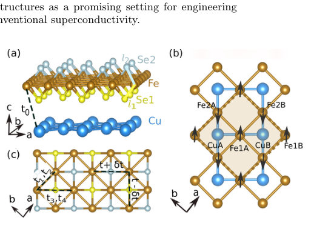
<figcaption class="paper-figure-caption"><b>Fig 1.</b> FIG. 1. (a) Side view of FeSe/Cu in the FeSe/cuprate het- erostructure, where the yellow (light blue) atoms represent Se1 (Se2) located below (above) the Fe layers. The presence of the substrate induces a shorter Fe-Se1 distance compared to the Fe-Se2 distance. (b) Top view of the effective Lieb lattice CuFe2 when omitting the ligands. (c) Top view of the FeSe lattice. t1 and t2 denote the nearest-neighbor hoppings, while t3 and t4 denote the next-nearest-neighbor hoppings. The dis- tinct bond distances of Fe-Se1 and Fe-Se2 give rise to different next-nearest-neighbor Fe-Fe hoppings in a checkerboard pat- tern, denoted as t + δt and t −δt. Orbital correspondences of these hoppings are...</figcaption>
</figure>
<figure class="paper-figure-card">
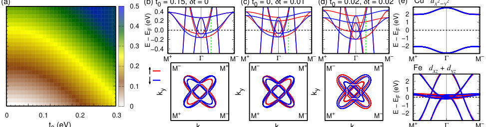
<figcaption class="paper-figure-caption"><b>Fig 2.</b> FIG. 2. Mean-field results of Eq. (1), showing band splittings (eV) induced by t0 (Cu-Fe interlayer hopping) and δt (Fe-Fe hopping asymmetry) at the K point (dotted green lines, top panels of b–d). Fermi surfaces are shown in bottom panels. Parameters: (b) the first mechanism only, with t0 = 0.15 eV, δt = 0; (c) the second mechanism only, with δt = 0.01 eV, t0 = 0; (d) parameters estimated for the realistic heterostructure, with t0 = 0.02 eV and δt = 0.02 eV, where both mechanisms are present. (e) Orbital-resolved spectral weights of the split bands, showing the Cu dx2−y2 orbital (top) and the Fe dxz + dyz orbitals (bottom).</figcaption>
</figure>
<figure class="paper-figure-card">
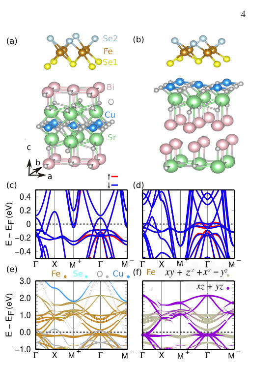
<figcaption class="paper-figure-caption"><b>Fig 3.</b> FIG. 3. Crystal structures of FeSe/Bi2Sr2CuO6 (FeSe/Bi- 2201) heterostructures, where Bi-2201 is constructed from fabricating (a) a BiO2 (structure A) and (b) CuO2 planes (structure B). (c),(d) Corresponding band structures for structures A and B, respectively. (e),(f) Atom- and d-orbital- projected spectral weights of Fe for structure A, respectively.</figcaption>
</figure>
<figure class="paper-figure-card">
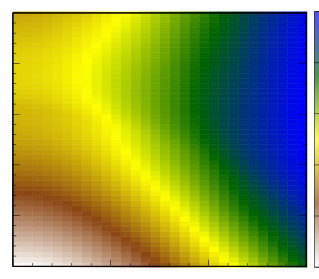
<figcaption class="paper-figure-caption"><b>Fig 4.</b> FIG. 4. Color plots of the transversal component of the spin conductivity σz xy = σz yx, normalized to its maximum value.</figcaption>
</figure>
</div>

<p><strong>Summary.</strong> This work proposes that FeSe/cuprate heterostructures are excellent platforms for studying altermagnetism—a state with spin splitting but no net magnetization. By modeling two distinct physical mechanisms (Lieb lattice coupling and substrate-induced symmetry breaking), the authors demonstrate how these systems can be engineered to host AM, which is crucial for understanding its interplay with unconventional superconductivity.</p>
<p><strong>Why it may be interesting.</strong> While focused on strongly correlated magnetism, the use of proximity effects and engineered lattice structures mirrors concepts in quantum interface engineering relevant to AMO physics, particularly concerning tunable electronic couplings at boundaries.</p>
<details>
<summary>Detailed structure</summary>
<p><strong>Main problem.</strong> The research aims to realize and study altermagnetism (AM) in high-temperature superconducting cuprate heterostructures to investigate spin-split electronic bands without net magnetization.</p>
<p><strong>Main result.</strong> Both a Lieb lattice mechanism involving Cu-Fe hybridization and a proximity effect due to substrate-induced symmetry breaking are shown to be viable routes for engineering AM in FeSe/cuprate systems.</p>
<p><strong>Method.</strong> The study employs effective tight-binding models, parameterized using first-principles Density Functional Theory (DFT) calculations, to predict electronic band structures and spin conductivity.</p>
<p><strong>Model / system.</strong> The physical platform is the FeSe/cuprate heterostructure, modeled as an effective CuFe2 Lieb lattice. The Hamiltonian incorporates hopping terms ($t_0$ for Cu-Fe coupling and $\delta t$ for substrate-induced inequivalence in FeSe).</p>
<p><strong>Key observables.</strong> Band splittings (d-wave splitting), spin conductivity ($\sigma_{xy}^z$), and orbital character of the electronic states.</p>
<p><strong>Important parameters / regimes.</strong> $t_0$ (Cu-Fe hopping), $\delta t$ (substrate-induced hopping difference), and $U$ terms for correlation effects.</p>
<p><strong>Assumptions / limitations.</strong> The authors assume a checkerboard AFM ordering state for FeSe magnetism in some analyses, and they use DFT approximations (GGA+U) to derive model parameters.</p>
<p><strong>Figures summary.</strong> Figures illustrate the heterostructure geometry, band splittings as functions of $t_0$ and $\delta t$, Fermi surfaces, and color plots showing enhanced spin conductivity ($\sigma_{xy}^z$).</p>
<p><strong>Paper structure.</strong> The paper first establishes the physical motivation (AM in cuprates), then develops an effective tight-binding model incorporating two distinct AM mechanisms. DFT calculations are used to parameterize this model, leading to quantitative predictions of band splittings and spin transport properties.</p>
</details>
<details>
<summary>Abstract</summary>
<p>Realizing altermagnetism in high-$T_c$ cuprate-based systems would provide a direct route for studying spin-split electronic bands in the absence of net magnetization and investigate their interplay with unconventional superconductivity. Here, we propose that FeSe/cuprate heterostructures offer such a platform, where a 45$^\circ$ twist of Cu and Fe layers creates an effective CuFe$_2$ Lieb lattice in which Fe magnetic order and Cu-Fe hybridization through the ligands induces altermagnetic $d$-wave spin splitting. A minimal tight-binding model shows that this mechanism is generic. Furthermore, a substrate-induced inequivalence of the two Se sites in FeSe provides a second route in which altermagnetism originates in the Fe layer and is transferred to the cuprate layer by proximity. Density functional theory calculations for FeSe/Bi$_2$Sr$_2$CuO$_6$ heterostructures confirm the viability of both mechanisms and reveal ways to enhance the spin splitting. These results establish superconducting cuprate/transition metal chalcogenide heterostructures as a promising setting for engineering altermagnetism and studying its coupling to unconventional superconductivity.</p>
</details>
<p><sub><a href="#top">↑ back to top</a></sub></p>

<p><a id="paper-2607.27999"></a></p>
<h3 id="observation-of-moire-time-crystal-in-floquet-driven-rydberg-atomic-gases"><a href="http://arxiv.org/abs/2607.27999v1">Observation of Moiré Time Crystal in Floquet-driven Rydberg Atomic Gases</a></h3>
<p><strong>Authors:</strong> Shuai Shi, Dong-Yang Zhu, Yu Yang, Chu-Rong Pan, Jing-Wen Tang, Ya-Peng Zhang, Yan-Li Zhou, Wei-Tao Liu, Li-Hua Zhang, Bang Liu, Dong-Sheng Ding<br>
<strong>Type:</strong> experiment · <strong>Category:</strong> other · <strong>PDF:</strong> <a href="https://arxiv.org/pdf/2607.27999v1">https://arxiv.org/pdf/2607.27999v1</a><br>
<strong>Analysis basis:</strong> full PDF text, analyzed in chunks
<strong>Topic relevance:</strong> 🔥 <code>Rydberg arrays</code> <strong>5/5</strong> · 🔥 <code>driven-dissipative phase transition</code> <strong>5/5</strong> · 🔥 <code>analog quantum simulation</code> <strong>4/5</strong> · 🔥 <code>non-equilibrium dynamics</code> <strong>4/5</strong> · <code>interference shaping light</code> <strong>3/5</strong> · <code>non-equilibrium universality</code> <strong>3/5</strong> · <code>methods for driven-dissipative</code> <strong>2/5</strong> · <code>quantum optics experiment</code> <strong>2/5</strong> · <code>Keldysh / 2PI / non-Gaussian methods</code> <strong>1/5</strong> · <code>correlated / nonlocal dissipation</code> <strong>1/5</strong> · <code>entanglement &amp; information structure</code> <strong>1/5</strong></p>
<div class="figure-strip-hint">↔ Scroll figures horizontally</div>
<div class="paper-figures-scroll">
<figure class="paper-figure-card">
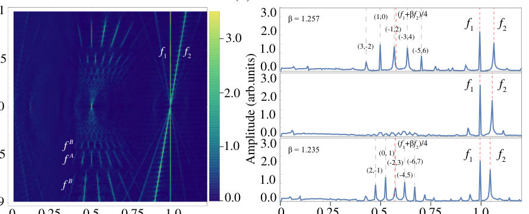
<figcaption class="paper-figure-caption"><b>Fig 1.</b> Figure 1. Experimental diagram and theoretical calculations (a) Schematic energy level diagram for a two-photon excitation scheme. The probe laser drives the transition from the ground state |g⟩to the intermediate state |e⟩, while the coupling laser excites the transition from |e⟩to the Rydberg state |R⟩with a detuning ∆c. The radio-frequency (RF) field driving induces the Rydberg state |R⟩into Floquet sidebands |R1⟩and |R2⟩, with an energy spacing of ω. (b) Simplified experimental setup. The probe and coupling lasers propagate counter-propagating and pass through the vapor cell. The bichromatic RF field is applied to the atoms via two parallel electrode plates built inside the cell,...</figcaption>
</figure>
<figure class="paper-figure-card">
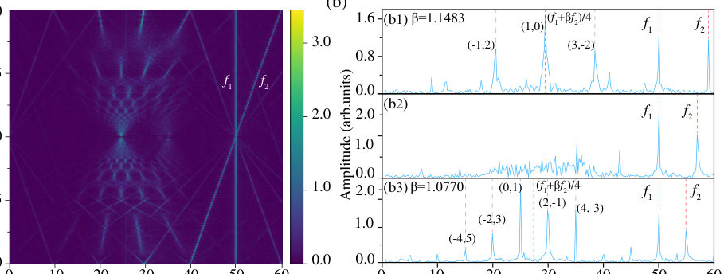
<figcaption class="paper-figure-caption"><b>Fig 2.</b> Figure 2. Measured Moir´e time crystal (a) Color map showing the probe light transmission while scanning the f2-field. In the experiment, the RF f1-field is set to a frequency of 13 MHz, an amplitude U1 = 250 mVpp, and a modulation frequency f1 = 50 kHz. The RF f2-field has a frequency of 13 MHz and an amplitude U2 = 260 mVpp. The color map is obtained by scanning the modulation frequency f2 of the f2-field from 40 kHz to 60 kHz. The color bar represents the transmission intensity. (b) Examples of the Fourier spectra of the system response at different modulation frequencies. (b1) When f2 = 59 kHz, the Fourier spectrum shows a Moir´e pattern of a frequency comb centered at mf1/2+nf2/2....</figcaption>
</figure>
<figure class="paper-figure-card">
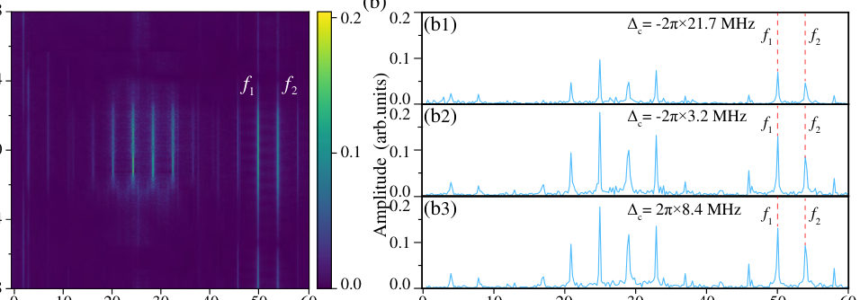
<figcaption class="paper-figure-caption"><b>Fig 3.</b> Figure 3. Robustness of the Moir´e time crystal pattern versus ∆c. The frequencies of the f1-field and the f2-field are set to 13 MHz. The amplitude of the f1-field is U1 = 280 mV, and that of the f2-field is U2 = 282 mV. The modulation frequency of the f1-field is f1 = 50 kHz, and that of the f2-field is set to f2 = 54 kHz. The system response exhibits a Moir´e pattern of a subharmonic frequency comb dominated by f2/2. (a) The phase diagram of the system response is obtained by scanning the coupling laser detuning ∆c from ∆c = −2π × 68 MHz to ∆c = 2π × 68 MHz. The color bar represents the transmission intensity. (b) Fourier spectra of the probe transmission at different coupling detunings...</figcaption>
</figure>
<figure class="paper-figure-card">
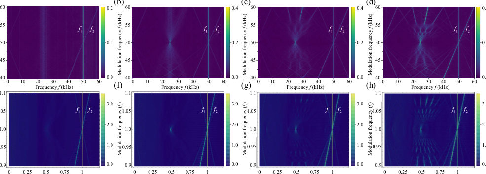
<figcaption class="paper-figure-caption"><b>Fig 4.</b> Figure 4. Measured and theoretical phase diagrams versus f2-field intensity. The frequency of the f1-field is set to 13 MHz, with a modulation frequency f1 = 50 kHz and amplitude U1 = 280 mV kept constant. The frequency of the f2-field is set to 13 MHz, with the amplitude U2 gradually increased, scanning the modulation frequency f2 from 40 kHz to 60 kHz to get phase diagrams of the system response under different RF field strengths. (a) f2 field strength U2 = 50 mV; (b) f2 field strength U2 = 140 mV; (c) f2 field strength U2 = 260 mV; (d) f2 field strength U2 = 280 mV. Panels (e)–(h) show the theoretical phase diagrams for driving strengths of f2 equal to 0.2, 0.3, 0.43, and 0.49,...</figcaption>
</figure>
<figure class="paper-figure-card">
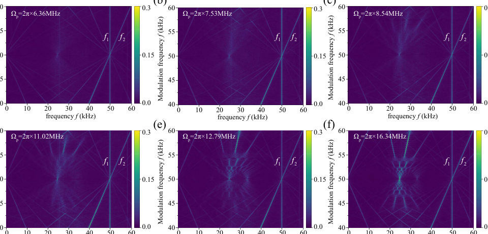
<figcaption class="paper-figure-caption"><b>Fig 5.</b> Figure 5. Phase diagrams obtained by varying the probe Rabi frequency Ωp. The frequencies of the f1-field and the f2-field are set to 13 MHz, with modulation frequency f1 = 50 kHz, amplitudes U1 = 370 mV and U2 = 380 mV. Phase diagrams of the system response are obtained by scanning f2 from 40 kHz to 60 kHz at different probe Rabi frequencies. Panels (a)–(f) correspond to progressively increasing probe Rabi frequencies, as indicated in the upper-left corners: (a) Ωp = 2π ×6.36 MHz, (b) Ωp = 2π × 7.53 MHz, (c) Ωp = 2π × 8.54 MHz, (d) Ωp = 2π × 11.02 MHz, (e) Ωp = 2π × 12.79 MHz, and (f) Ωp = 2π × 16.34 MHz.</figcaption>
</figure>
</div>

<p><strong>Summary.</strong> The researchers report the first experimental observation of a Moiré Time Crystal (MTC) using Rydberg atomic gases driven by two distinct radiofrequency fields. They demonstrate that the interplay between long-range interactions and dissipation creates a unique comb-like spectral pattern. This work establishes the platform as a powerful tool for engineering complex temporal order in driven quantum many-body systems.</p>
<p><strong>Why it may be interesting.</strong> This work is highly relevant as it uses Rydberg atoms—a premier platform for studying strong interactions in AMO physics—to realize and map out complex non-equilibrium quantum phases like MTCs, providing a controllable system for exploring synthetic space-time symmetries.</p>
<details>
<summary>Detailed structure</summary>
<p><strong>Main problem.</strong> The primary goal was the experimental observation and characterization of a Moiré Time Crystal (MTC), a non-equilibrium quantum phase arising from the coherent interference of two distinct driving frequencies.</p>
<p><strong>Main result.</strong> The authors successfully demonstrated the MTC in Rydberg atomic gases, evidenced by a unique comb-like pattern in the Fourier spectrum that staggers as the relative frequency difference between the two drives is tuned.</p>
<p><strong>Method.</strong> The experiment uses a bichromatic driving field applied to strongly interacting Rydberg atoms and analyzes the time-domain response via Fourier transformation to map out the system's spectral phase diagram.</p>
<p><strong>Model / system.</strong> The platform is Floquet-driven Rydberg atomic gases, where dynamics are governed by a Hamiltonian incorporating long-range van der Waals interactions ($C_6/|r_i - r_j|^6$) and dissipation via Lindblad channels. The system is driven using two distinct radiofrequency (RF) fields.</p>
<p><strong>Key observables.</strong> The spectral response, specifically the appearance of a 'beat-note comb' in the Fourier spectra, characterized by subharmonic periodicity ($f_1/2 + n f_2/2$) and fundamental frequencies.</p>
<p><strong>Important parameters / regimes.</strong> Two distinct driving frequencies ($f_1$ and $f_2$), laser detunings ($\Delta$), and the ratio between these frequencies are crucial parameters for tuning the Moiré pattern.</p>
<p><strong>Assumptions / limitations.</strong> The analysis assumes that spectral features correspond to nonlinear mixing and competition between subharmonic components, which define the MTC state. The persistence of the order against perturbations in laser detuning is also a key finding.</p>
<p><strong>Figures summary.</strong> Figures illustrate phase diagrams showing the switching of comb structures based on frequency ratios (e.g., $f_2/f_1$), and Fourier spectra confirming the staggered subharmonic comb structure under dual-RF driving.</p>
<p><strong>Paper structure.</strong> The paper progresses from establishing the theoretical basis for MTCs in this system, detailing the experimental setup using bichromatic driving fields, presenting measurements of the spectral response across varying frequency ratios, and finally analyzing specific peak structures (like a 10 kHz difference frequency) to confirm the nonlinear mixing mechanism.</p>
</details>
<details>
<summary>Abstract</summary>
<p>A Moiré time crystal is a non-equilibrium quantum phase emerging from the coherent interference of two distinct frequencies, at least one being the intrinsic oscillation of a symmetry-broken time crystal. Its hallmark is an ultra-long beat period, reflecting a time-domain mapping of the Moiré fringes that arise from mismatched spatial lattices. However, to date, no experimental realization of such a Moiré time crystal has been reported. In this work, by applying a bichromatic driving field with two distinct frequencies, we demonstrate that the interplay between long-range Rydberg interactions and dissipation gives rise to a unique comb-like Moiré pattern characterized by a beat-note comb, which superimposes subharmonic periodicity and fundamental frequencies. This Moiré pattern formed by two mismatched drives is staggered in the spectrum as the frequency of one driver changes. We experimentally map the phase diagram of the system and identify a robust region where the Moiré temporal order persists against perturbations in laser detuning. The reported Moiré time crystal not only provides a controllable platform for exploring emergent slow-fast dynamics and synthetic space-time symmetries but also opens avenues for engineering complex temporal order in driven quantum many-body systems.</p>
</details>
<p><sub><a href="#top">↑ back to top</a></sub></p>

<p><a id="paper-2607.27668"></a></p>
<h3 id="non-relativistic-floquet-conformal-field-theory"><a href="http://arxiv.org/abs/2607.27668v1">Non-relativistic Floquet Conformal Field Theory</a></h3>
<p><strong>Authors:</strong> Diptarka Das, Sumit R. Das, Arnab Kundu, Krishnendu Sengupta<br>
<strong>Type:</strong> theory · <strong>Category:</strong> quantum gases · <strong>PDF:</strong> <a href="https://arxiv.org/pdf/2607.27668v1">https://arxiv.org/pdf/2607.27668v1</a><br>
<strong>Analysis basis:</strong> full PDF text, analyzed in chunks
<strong>Topic relevance:</strong> 🔥 <code>non-equilibrium dynamics</code> <strong>5/5</strong> · 🔥 <code>analog quantum simulation</code> <strong>4/5</strong> · 🔥 <code>non-equilibrium universality</code> <strong>4/5</strong> · <code>driven-dissipative phase transition</code> <strong>3/5</strong> · <code>methods for driven-dissipative</code> <strong>3/5</strong> · <code>Keldysh / 2PI / non-Gaussian methods</code> <strong>2/5</strong> · <code>correlated / nonlocal dissipation</code> <strong>2/5</strong> · <code>entanglement &amp; information structure</code> <strong>2/5</strong> · <code>Kondo &amp; dissipative impurity</code> <strong>1/5</strong> · <code>Rydberg arrays</code> <strong>1/5</strong> · <code>exotic spin models in light-matter</code> <strong>1/5</strong> · <code>scars &amp; prethermalization</code> <strong>1/5</strong></p>
<div class="figure-strip-hint">↔ Scroll figures horizontally</div>
<div class="paper-figures-scroll">
<figure class="paper-figure-card">
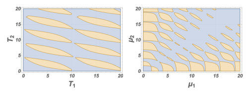
<figcaption class="paper-figure-caption"><b>Fig 1.</b> FIG. 1. Plot of T as a function of T1 and T2 = T −T1. The blue(yellow) regions indicate phases of oscillatory (ex- ponential) dependence on T . The left panel corresponds to µ1 = 0.3, µ2 = 0.7 with T1, T2 are varied while the right panel corresponds to T1 = T2 = 1, and µ1, µ2 are varied.</figcaption>
</figure>
<figure class="paper-figure-card">
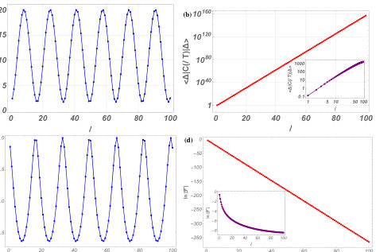
<figcaption class="paper-figure-caption"><b>Fig 2.</b> FIG. 2. (a) Plot of Cℓ(blue curve)as a function of ℓin the elliptic phase. The parameters for the plot are T = 0.3, T1 = 0.2, µ1 = 0.6 and µ2 = 0.7. (b) Exponential growth of Cℓ as a function of ℓin the hyperbolic phase corresponding to T = 9, T1 = 5, µ1 = 0.1 and µ2 = 1.3. The inset (log-log plot) shows the near-linear growth of Cℓas a function of ℓ near the transition surface. The parameters for the inset are T = 2, T1 = 1, µ1 = 4.833 and µ2 = 15.011. (c) Plot of ln |F| as a function of ℓin the elliptic phase. (d) Same as in (c) but in the hyperbolic phase. The inset of (d) shows a slower, almost logarithmic, decay of ln |F| near the transition surface. All parameters in (c) and (d) are...</figcaption>
</figure>
<figure class="paper-figure-card">
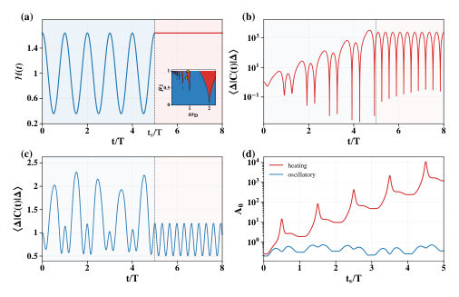
<figcaption class="paper-figure-caption"><b>Fig 3.</b> FIG. 4. (a) Schematic representation of an experimentally relevant protocol where energy is pumped using a continuous cosine drive (µ2(t) = µ2 1 + µ2 2 cos ωDt) till ts = 5T (vertical dashed line) followed by a Hamiltonian evolution with H = H + (µ2 1 + µ2 2)C for 8T ≥t &gt; ts. The inset indicates the phase diagram in the µ2 −ωD plane showing hyperbolic (red) and elliptic (blue) phases. (b) Plot of C(t) for µ2 = 0.99, ωD = 0.915 showing large amplitude oscillations which grows with the driving time. This is a signature of the hyperbolic phase and (c) Same as (b) but for µ2 = 0.8 and ωD = 0.835 showing smaller amplitude oscillations signifying the elliptic phase. (d) Plot of oscillation...</figcaption>
</figure>
<figure class="paper-figure-card">
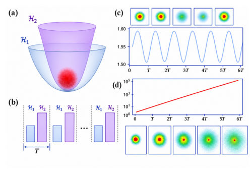
<figcaption class="paper-figure-caption"><b>Fig 4.</b> FIG. 3. (a) Schematic representations of (a) ultracold fermions in a trap and (b) the square-pulse drive protocol with period T. Here H1 and H2 corresponds to Hamiltoni- ans of trapped fermions with trap frequencies µ1 and µ2 re- spectively. (c) and (d) Fermion clouds in different dynamical phases. (c) In the elliptic phase, the cloud oscillates around a mean position while (d) in the hyperbolic phase, its radius expands. See text for details.</figcaption>
</figure>
<figure class="paper-figure-card">
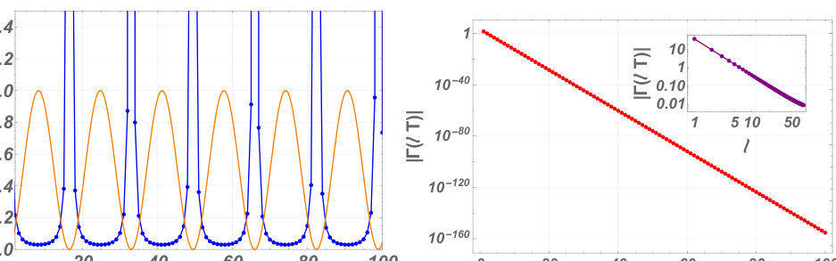
<figcaption class="paper-figure-caption"><b>Fig 5.</b> FIG. 1. Plots of absolute value of Γ(t) in different steady states. We choose nO = 1 and ∆= 2. The left panel corresponds to µ1 = 0.6, µ2 = 0.7, T1 = 0.2 and T = 0.3, blue curve indicating the elliptic stroboscopic response, while the orange curve plots scaled sin2(ℓρ). The red points in the log plot of the right panel corresponds to exponential decay with µ1 = 0.1, µ2 = 1.3, T1 = 5 and T = 9. The inset (log-log plot) is chosen with µ1 = 4.833, µ2 = 15.011, T1 = 1, T = 2, shows the parabolic phase. See text for details.</figcaption>
</figure>
</div>

<p><strong>Summary.</strong> This paper develops a universal formalism to study Floquet dynamics in quantum systems with non-relativistic conformal invariance. It identifies three distinct dynamical regimes—hyperbolic, elliptic, and parabolic—diagnosed via stroboscopic measurements of observables like state fidelity. The results are significant because they connect these quantum phases to deep concepts in general relativity, such as ergospheres and extremal Killing horizons.</p>
<p><strong>Why it may be interesting.</strong> This work provides powerful theoretical tools for analyzing non-equilibrium dynamics in quantum systems relevant to ultracold atoms. The classification of dynamical phases based on conformal symmetry is highly general and offers testable predictions for experiments involving trapped fermions near unitarity.</p>
<details>
<summary>Detailed structure</summary>
<p><strong>Main problem.</strong> Developing a formalism to study Floquet dynamics for quantum systems exhibiting non-relativistic conformal invariance.</p>
<p><strong>Main result.</strong> The analysis predicts three universal dynamical phases—hyperbolic, elliptic, and parabolic—characterized by the stroboscopic evolution of observables. Furthermore, it establishes a holographic link where the hyperbolic phase corresponds to an ergosphere in the bulk geometry.</p>
<p><strong>Method.</strong> The study uses Floquet theory applied to Hamiltonians derived from an SO(2, 1) algebra, mapping the dynamics onto the Ermakov-Pinney equation for analysis.</p>
<p><strong>Model / system.</strong> The model concerns periodically driven strongly correlated quantum systems, with trapped fermions near unitarity and resonant anyons serving as key physical examples. The dynamics are governed by a time-dependent Hamiltonian constructed from generators of an SO(2, 1) subalgebra.</p>
<p><strong>Key observables.</strong> One-point functions (e.g., expectation value of the conformal generator), state fidelity ($F$), and the trace diagnostic $T = rac{1}{2}	ext{Tr} U(T)$.</p>
<p><strong>Important parameters / regimes.</strong> Drive frequencies ($\omega_D$), modulation amplitudes ($\mu_2^0, eta$), and the number of periods ($\ell$).</p>
<p><strong>Assumptions / limitations.</strong> The analysis assumes the existence of non-relativistic conformal invariance and utilizes the $   ext{SO}(2, 1)$ algebraic structure to simplify the time evolution.</p>
<p><strong>Figures summary.</strong> Figures illustrate phase diagrams mapping out oscillatory (elliptic) vs. exponential (hyperbolic) behavior of observables like $T$ and $\ln |F|$ as a function of drive parameters.</p>
<p><strong>Paper structure.</strong> The paper progresses by establishing the general formalism using SO(2, 1) symmetry, deriving diagnostics based on stroboscopic evolution, mapping out the three distinct dynamical phases (hyperbolic, elliptic, parabolic), and concluding with a holographic interpretation linking these phases to specific geometric structures like ergosurfaces.</p>
</details>
<details>
<summary>Abstract</summary>
<p>We develop a formalism for studying Floquet dynamics for systems with {\it non-relativistic} conformal invariance in $d$ spatial dimensions. Our analysis indicates the existence of two dynamical phases, hyperbolic and elliptic, separated by a parabolic transition surface. We demonstrate this by studying the expectation value of a conformal generator in the many body ground state during the drive, as well as the fidelity of this state. Stroboscopically, they behave exponentially in the hyperbolic phase, show oscillatory behavior in the elliptic phase, and exhibit power-law on the transition surface. Our analysis is completely universal and can be directly applied to several systems including trapped fermions near unitarity and resonant anyons. The former can provide experimental signatures of these dynamical phases. We also comment on a holographic perspective of such driven non-relativistic CFTs and demonstrate that the hyperbolic phase is associated with a timelike stationary-limit surface, such as an ergosphere, in the bulk, while the parabolic phase corresponds to an extremal Killing horizon.</p>
</details>
<p><sub><a href="#top">↑ back to top</a></sub></p>

<p><a id="paper-2607.28034"></a></p>
<h3 id="scaling-theory-of-decoherence-in-dicke-superradiance"><a href="http://arxiv.org/abs/2607.28034v1">Scaling theory of decoherence in Dicke superradiance</a></h3>
<p><strong>Authors:</strong> Nico S. Bassler, Julian Lyne, Javier Cuerda<br>
<strong>Type:</strong> theory · <strong>Category:</strong> statistical mechanics · <strong>PDF:</strong> <a href="https://arxiv.org/pdf/2607.28034v1">https://arxiv.org/pdf/2607.28034v1</a><br>
<strong>Analysis basis:</strong> full PDF text, analyzed in chunks
<strong>Topic relevance:</strong> 🔥 <code>Dicke superradiance</code> <strong>5/5</strong> · 🔥 <code>correlated / nonlocal dissipation</code> <strong>4/5</strong> · <code>driven-dissipative phase transition</code> <strong>3/5</strong> · <code>methods for driven-dissipative</code> <strong>3/5</strong> · <code>superradiant laser</code> <strong>3/5</strong> · <code>Tavis-Cummings &amp; cavity-many-emitter</code> <strong>2/5</strong> · <code>non-equilibrium universality</code> <strong>2/5</strong> · <code>Keldysh / 2PI / non-Gaussian methods</code> <strong>1/5</strong> · <code>analog quantum simulation</code> <strong>1/5</strong> · <code>correlated cavity matter</code> <strong>1/5</strong> · <code>free-space correlated emission</code> <strong>1/5</strong> · <code>non-equilibrium dynamics</code> <strong>1/5</strong></p>
<div class="figure-strip-hint">↔ Scroll figures horizontally</div>
<div class="paper-figures-scroll">
<figure class="paper-figure-card">
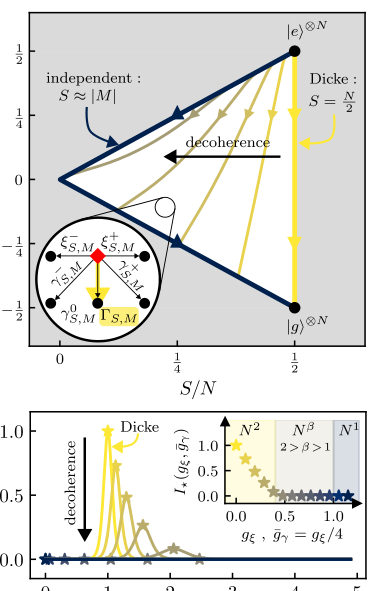
<figcaption class="paper-figure-caption"><b>Fig 1.</b> Figure 1. Dicke triangle, burst scalings and transitions. (a) Dynamics on the Dicke triangle, where for increasing de- coherence strength trajectories are pushed towards smaller S–values. The inset shows the matrix elements of the local and collective processes for a given state |S, M⟩( ). (b) Intensity dynamics for the trajectories in (a), normalized by the peak intensity I(Dicke) ⋆ of ideal Dicke superradiance at the same N. Decoherence reduces the ideal superradiant burst. The inset shows the peak intensity as a function of the decoherence strength undergoing a phase transition.</figcaption>
</figure>
<figure class="paper-figure-card">
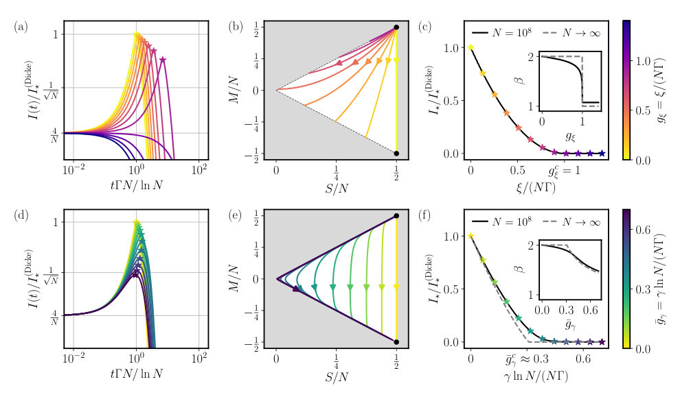
<figcaption class="paper-figure-caption"><b>Fig 2.</b> Figure 2. Large–N dynamics. Results are shown for dephasing (top row) and spontaneous emission (bottom row) at N = 108. (a,d) Normalized intensity as a function of rescaled time for varying scaling variables on a log-log scale. Stars (⋆) indicate the peak intensity I⋆. (b,e) Corresponding trajectories on the Dicke triangle. While dephasing changes the angle at which the trajectories enter the triangle, local spontaneous emission shifts the point at which the trajectories enter the triangle to smaller S–values. (c,f) Normalized peak intensity undergoing a phase transition as a function of the scaling variables gξ, ¯gγ and insets showing the scaling exponent β. For dephasing (c), I⋆closes...</figcaption>
</figure>
<figure class="paper-figure-card">
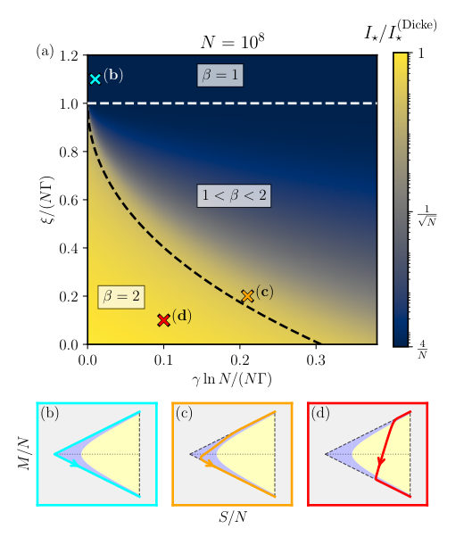
<figcaption class="paper-figure-caption"><b>Fig 3.</b> Figure 3. Phase diagram and Dicke-triangle trajecto- ries. (a) Mean-field phase diagram showing the normalized intensity in the (¯gγ, gξ) plane for N = 108. The dashed lines indicate the asymptotic phase boundaries at β = 2 (black) and β = 1 (white). In (b-d) we show corresponding represen- tative trajectories in the three regions. Blue shading in panels (b-d) marks the region I = s2 −m2 &lt; N −0.2, corresponding to β &lt; 1.8 and with the complement in yellow. The specific threshold is chosen only for visualization.</figcaption>
</figure>
</div>

<p><strong>Summary.</strong> This paper develops a scaling theory to analyze Dicke superradiance when local dephasing and spontaneous emission are present. It shows that the peak intensity scales according to three distinct regimes ($eta=2$, $1 < eta < 2$, $eta=1$), determined by dimensionless parameters governing decoherence strength. This work is crucial for understanding how environmental coupling limits or modifies collective quantum enhancements in many-body systems.</p>
<p><strong>Why it may be interesting.</strong> This work provides a quantitative framework for understanding how environmental coupling (decoherence) fundamentally alters collective quantum phenomena like superradiance, extending beyond simple mean-field predictions into scaling theory.</p>
<details>
<summary>Detailed structure</summary>
<p><strong>Main problem.</strong> The study investigates the competition between correlation buildup (collective emission) and decoherence mechanisms in many-body quantum systems, specifically focusing on how this affects coherence survival.</p>
<p><strong>Main result.</strong> The paper derives a scaling theory showing that the peak intensity of superradiance exhibits three distinct regimes ($eta=2$, $1 < eta < 2$, $eta=1$) depending on the balance between collective and decohering processes.</p>
<p><strong>Method.</strong> An analytical scaling theory is developed using the large-$N$ limit approximation applied to the dynamics governed by a Lindblad master equation, focusing only on dissipation.</p>
<p><strong>Model / system.</strong> The system modeled is Dicke superradiance involving N two-level emitters. The dynamics are described by a Lindblad master equation incorporating terms for collective emission, local dephasing ($\xi$), and spontaneous emission ($\gamma$).</p>
<p><strong>Key observables.</strong> Peak radiated intensity $I(t)$ (scaling as $N^eta$), the scaling exponent $eta$, and normalized peak intensity ratios.</p>
<p><strong>Important parameters / regimes.</strong> The dimensionless scaling variables $g_\xi = \xi / (N\Gamma)$ and $ar{g}_\gamma = \gamma \ln N / (N\Gamma)$, which govern the transition between regimes.</p>
<p><strong>Assumptions / limitations.</strong> The analysis relies on the large-$N$ limit approximation to derive mean-field equations for intensive variables, and it focuses purely on dissipative dynamics without unitary evolution.</p>
<p><strong>Figures summary.</strong> Figures illustrate the Dicke triangle dynamics showing decoherence effects, and phase diagrams map out the boundaries between $eta=2$, $1 < eta < 2$, and $eta=1$ regimes in the $(ar{g}_\gamma, g_\xi)$ plane.</p>
<p><strong>Paper structure.</strong> The paper builds from defining the physical problem (coherence vs. decoherence) to developing the scaling theory using mean-field approximations, deriving the generalized scaling law $I^* \propto N^{eta(g_\xi, ar{g}_\gamma)}$, and mapping out the phase diagram showing the transition between the three distinct superradiance regimes.</p>
</details>
<details>
<summary>Abstract</summary>
<p>The survival of many-body coherence depends on the competition between correlation buildup and decoherence. In Dicke superradiance, collective emission builds up correlations, producing a peak intensity scaling as $N^2$ for $N$ emitters. We develop a scaling theory including local dephasing and spontaneous emission and obtain fully collective, partially collective, and independent-emitter scaling regimes. The boundary of the fully collective regime defines a continuous phase transition in a transient observable. Local decoherence can prevent $N^2$ scaling despite increasing $N$.</p>
</details>
<p><sub><a href="#top">↑ back to top</a></sub></p>

<p><a id="paper-2607.28364"></a></p>
<h3 id="noise-aware-emulation-and-cross-device-validation-of-neutral-atom-analog-quantum-processing-units"><a href="http://arxiv.org/abs/2607.28364v1">Noise-aware emulation and cross-device validation of neutral atom analog quantum processing units</a></h3>
<p><strong>Authors:</strong> Constantin Dalyac, Sergi Julià-Farré, Lucas Leclerc, Vittorio Vitale, Boris Albrecht, Lucas Béguin, Kemal Bidzhiev, Petru Borta, Clémence Briosne-Frejaville, Daniel J. Campbell, Dorian Claveau, Makrem Chatti, Antoine Cornillot, Julius de Hond, Anita Devi, Thomas Eritzpokhoff, Gaétan Hercé, Fergus Hayes, Soufiane Kaghad, Arun Kumar Abhimanyu, Lucas Lassablière, Mauro Mendizabal, Anton Quelle, Julien Ripoll, Henrique Silvério, Joseph Vovrosh, Guillaume Villaret, Adrien Signoles, Alexandre Dauphin<br>
<strong>Type:</strong> both · <strong>Category:</strong> other · <strong>PDF:</strong> <a href="https://arxiv.org/pdf/2607.28364v1">https://arxiv.org/pdf/2607.28364v1</a><br>
<strong>Analysis basis:</strong> full PDF text, analyzed in chunks
<strong>Topic relevance:</strong> 🔥 <code>Rydberg arrays</code> <strong>5/5</strong> · 🔥 <code>QC/QI experiment</code> <strong>4/5</strong> · 🔥 <code>analog quantum simulation</code> <strong>4/5</strong> · <code>methods for driven-dissipative</code> <strong>3/5</strong> · <code>non-equilibrium dynamics</code> <strong>3/5</strong> · <code>correlated / nonlocal dissipation</code> <strong>2/5</strong> · <code>driven-dissipative phase transition</code> <strong>2/5</strong> · <code>Keldysh / 2PI / non-Gaussian methods</code> <strong>1/5</strong> · <code>entanglement &amp; information structure</code> <strong>1/5</strong> · <code>non-equilibrium universality</code> <strong>1/5</strong></p>
<div class="figure-strip-hint">↔ Scroll figures horizontally</div>
<div class="paper-figures-scroll">
<figure class="paper-figure-card">
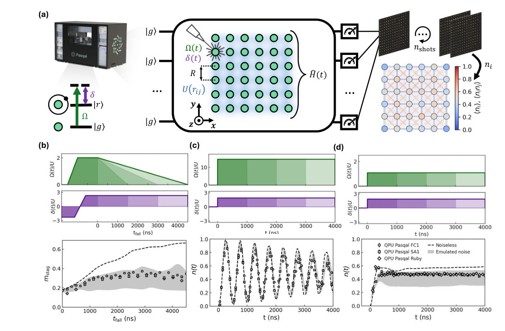
<figcaption class="paper-figure-caption"><b>Fig 1.</b> Figure 1. Analog Rydberg QPU cycle and benchmark protocols. (a), Schematic of the QPU cycle for a register of two-level atoms with ground state |g⟩and Rydberg state |r⟩driven by a global Rabi frequency Ω(t) and detuning δ(t), with interactions Uij set by the geometry and atomic spacing R. After the programmed evolution, projective readout in the z basis is obtained from fluorescence imaging. Bitstrings over nshots repetitions can be used to estimate site-resolved observables such as local occupations ⟨ni⟩and correlators. (b), Annealing protocol. Top: time-dependent control schedule with Ω(t) and δ(t). Bottom: staggered magnetization mstag measured at the end of the evolution as a function...</figcaption>
</figure>
<figure class="paper-figure-card">
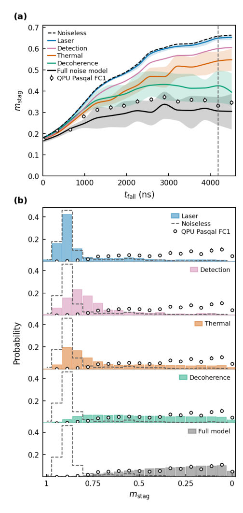
<figcaption class="paper-figure-caption"><b>Fig 2.</b> Figure 2. Annealing noise-budget decomposition. (a), Staggered magnetization mstag versus final ramp-down duration tfall. Noiseless emulation (black dashed), single- noise contributions—laser (blue), detection (pink), thermal (orange), decoherence (green), —and full noise model (black, with shaded Monte Carlo envelope), compared to FC1 exper- imental data (markers with shot-noise error bars). (b), Out- come distribution of bitstring probability at tfall = 4180 ns ordered by decreasing mstag for the noiseless (dashed), single- noise (colored), full noise model simulations (gray) and FC1 experimental data (markers) with error bars obtained from binning.</figcaption>
</figure>
<figure class="paper-figure-card">
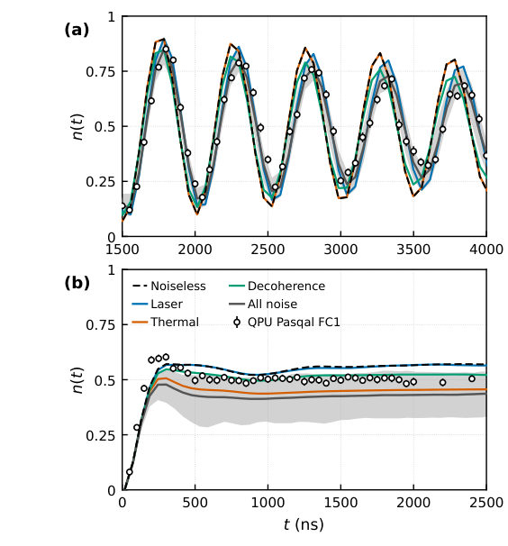
<figcaption class="paper-figure-caption"><b>Fig 3.</b> Figure 3. Noise-emulation methodology for the post- quench dynamics protocol. Dynamics of the mean Ry- dberg population, n(t), in a 6 × 6 square lattice. We compare the Pasqal FC1 data (white marker with shot-noise error bars) against emu-mps emulators of the ideal Hamiltonian (dashed black line), the full noise model (solid green line, with con- fidence area), and marginal noise models with effects from: lasers (solid blue line), temperature (solid red line), and ef- fective channels (solid gray line). For a better visualization, we did not include the confidence area of the marginal noise models. (a), Small interaction regime, Ω/U = 14.5. (b), Strongly interacting regime, Ω/U = 1.1.</figcaption>
</figure>
<figure class="paper-figure-card">
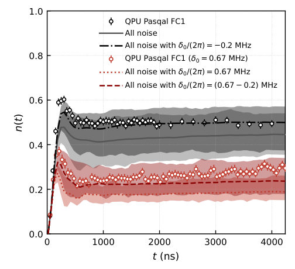
<figcaption class="paper-figure-caption"><b>Fig 4.</b> Figure 4. Impact of systematic experimental para- meter biases in post quench-dynamics. Dynamics of the mean Rydberg population, n(t), in a 6 × 6 square lattice (strong interaction regime Ω/U = 1.1). Emulations of the full noise model with emu-mps, including different systematic global detuning biases, δ0 = −0.2, 0.67, 0.47 MHz, are shown with confidence intervals. Two Pasqal FC1 data are shown for comparison: one at the target setpoint and one where an offset δ0 = 0.67 MHz was intentionally programmed (orange dots).</figcaption>
</figure>
<figure class="paper-figure-card">
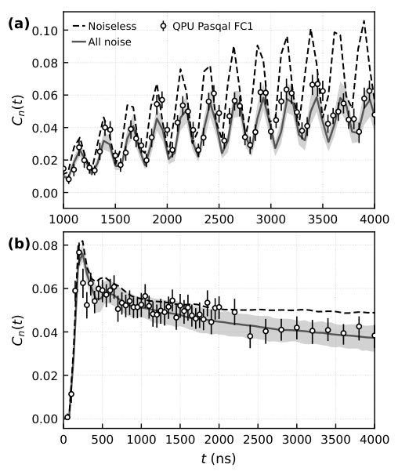
<figcaption class="paper-figure-caption"><b>Fig 5.</b> Figure 5. Impact of noise in post-quench dynamics cor- relations. Dynamics of the mean nearest-neighbor correla- tion Cn(t). We compare the Pasqal FC1 data with emu-mps emulation of the ideal Hamiltonian (dashed line) and the full noise model (solid line). (a), Weak interaction regime. (b), Strong interaction regime.</figcaption>
</figure>
</div>

<p><strong>Summary.</strong> The paper introduces a comprehensive, noise-aware emulation framework to predict the behavior of neutral atom quantum processors operating with Rydberg atoms. By modeling various sources of hardware imperfections—such as thermal motion and laser fluctuations—the authors validate their emulator against real data from multiple devices using annealing and quench protocols. This establishes a crucial tool for guiding future algorithm design and improving physical hardware reliability.</p>
<p><strong>Why it may be interesting.</strong> This work is highly relevant as it bridges theoretical modeling of open quantum systems with practical hardware validation for Rydberg arrays. The methodology provides a necessary toolset for scaling up simulations beyond current classical computational limits in AMO physics.</p>
<details>
<summary>Detailed structure</summary>
<p><strong>Main problem.</strong> The core challenge is establishing confidence in quantum processor outputs by quantitatively linking microscopic hardware noise imperfections to measurable empirical results, especially beyond classically solvable regimes.</p>
<p><strong>Main result.</strong> A novel noise-aware emulation framework was developed and successfully validated across multiple physical devices, allowing researchers to isolate dominant error sources for targeted algorithm and hardware improvements.</p>
<p><strong>Method.</strong> The authors combine developing a full computational cycle emulator that propagates various noise mechanisms (thermal motion, laser fluctuations) with benchmarking against established quantum protocols like quantum annealing and post-quench dynamics.</p>
<p><strong>Model / system.</strong> The system utilizes neutral atoms trapped in Rydberg arrays, governed by an interaction Hamiltonian involving tunable Rabi frequencies ($\Omega(t)$) and detunings ($\delta(t)$). The platform is tested on multiple commercial Pasqal quantum processors.</p>
<p><strong>Key observables.</strong> Local populations ($\langle n_i 
angle$), $k$-body correlation functions (e.g., staggered magnetization $m_{	ext{stag}}$), and the decay of Rabi oscillation amplitudes.</p>
<p><strong>Important parameters / regimes.</strong> Noise sources include thermal motion, laser intensity/phase noise, and state preparation errors; key regimes involve comparing $\Omega/U$ ratios in dynamics simulations.</p>
<p><strong>Assumptions / limitations.</strong> The framework assumes that by modeling dominant noise channels, predictive power can be established even when full classical simulation is impossible. Convergence checks for MPS simulations are also crucial.</p>
<p><strong>Figures summary.</strong> Figures illustrate the QPU cycle (preparation $
ightarrow$ evolution $
ightarrow$ measurement), comparing experimental data from three devices against emulator predictions for annealing and post-quench dynamics, alongside convergence plots using Matrix Product States (MPS).</p>
<p><strong>Paper structure.</strong> The paper introduces the physical platform and Hamiltonian, details the noise sources affecting control parameters ($\Omega, \delta$), presents the noise-aware emulation framework, validates it by benchmarking two key protocols (annealing and post-quench), and discusses systematic error mitigation.</p>
</details>
<details>
<summary>Abstract</summary>
<p>Analog quantum processors based on Rydberg atom arrays are a powerful platform for many-body quantum simulation, combinatorial optimization, and graph machine learning. As these devices become increasingly accessible, establishing confidence in their outputs requires predictive models that quantitatively connect microscopic hardware imperfections to empirical results. Here, we present a noise-aware emulation framework that propagates the dominant noise mechanisms throughout the full computation cycle to predict device behavior. We validate the framework by benchmarking two representative protocols, quantum annealing and post-quench dynamics, on three Pasqal quantum processors where classical simulations still provide ground truth. Across all three devices, the measured observables fall within the uncertainty envelopes predicted by the emulator. Beyond reproducing the data, the framework isolates which physical mechanism dominates in each operating regime, provides quantitative guidance for algorithm design and hardware improvements, and establishes a foundation for verifying analog processors in regimes beyond classical reach.</p>
</details>
<p><sub><a href="#top">↑ back to top</a></sub></p>

<p><a id="paper-2607.28106"></a></p>
<h3 id="three-dimensional-kardar-parisi-zhang-scaling-in-polariton-condensates"><a href="http://arxiv.org/abs/2607.28106v1">Three-Dimensional Kardar--Parisi--Zhang Scaling in Polariton Condensates</a></h3>
<p><strong>Authors:</strong> Junhui Cao, Denis Novokreschenov, Artem Alexandrov, Timothy Halpin-Healy, Alexey Kavokin<br>
<strong>Type:</strong> both · <strong>Category:</strong> statistical mechanics · <strong>PDF:</strong> <a href="https://arxiv.org/pdf/2607.28106v1">https://arxiv.org/pdf/2607.28106v1</a><br>
<strong>Analysis basis:</strong> full PDF text, analyzed in chunks
<strong>Topic relevance:</strong> 🔥 <code>non-equilibrium universality</code> <strong>5/5</strong> · 🔥 <code>analog quantum simulation</code> <strong>4/5</strong> · 🔥 <code>driven-dissipative phase transition</code> <strong>4/5</strong> · <code>methods for driven-dissipative</code> <strong>3/5</strong> · <code>non-equilibrium dynamics</code> <strong>3/5</strong> · <code>Frenkel-Kontorova</code> <strong>1/5</strong> · <code>Keldysh / 2PI / non-Gaussian methods</code> <strong>1/5</strong> · <code>correlated / nonlocal dissipation</code> <strong>1/5</strong> · <code>correlated cavity matter</code> <strong>1/5</strong></p>
<div class="figure-strip-hint">↔ Scroll figures horizontally</div>
<div class="paper-figures-scroll">
<figure class="paper-figure-card">
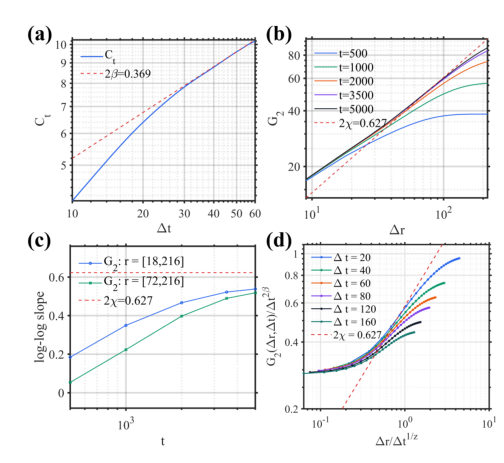
<figcaption class="paper-figure-caption"><b>Fig 1.</b> FIG. 1. 3 + 1 KPZ benchmark in the strong-coupling regime. The main run uses N = 128, dx = 9, ν = 0.9, dt = 0.5, geff = 500, and 104 noise realizations. (a) Temporal compact coher- ence Ct = −log |g(1)(0, ∆t)| with the 2β = 0.369 guide, while the short-lag fit 30 ≤∆t ≤60 gives slope 0.375. (b) Equal- time height correlator G2(∆r, t) = ⟨[θ(r + ∆r, t) −θ(r, t)]2⟩. (c) Spatial slopes versus observation time. (d) Dynamical scaling of the spatiotemporal correlator. The curves for ∆t = 20, 40, 60, 80, 120 and 160 are plotted as G2(∆r, ∆t)/∆t2β ver- sus ∆r/∆t1/z.</figcaption>
</figure>
<figure class="paper-figure-card">
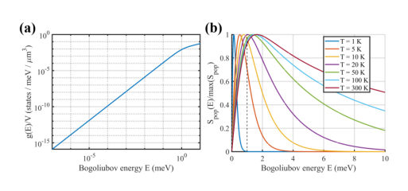
<figcaption class="paper-figure-caption"><b>Fig 2.</b> FIG. 3. (a) Density of states g3D(E) of 3D Bogoli- ubov dispersion. (b) Normalized energy-resolved popula- tion spectrum of three-dimensional Bogoliubov excitations, Spop(E) = g3D(E)fB(E, Teff), for several effective tempera- tures T = 1, 5, 10, 20, 50, 100, 300 K. Chemical potential µ is set as 1 meV.</figcaption>
</figure>
<figure class="paper-figure-card">
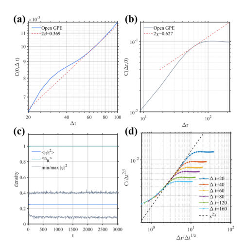
<figcaption class="paper-figure-caption"><b>Fig 3.</b> FIG. 2. Disordered-pump stochastic open-GPE calculation. The run uses L = 128, dx = 9, dt = 0.25, tmax = 3000, P0 = 1.05Pth, weak annealed gain disorder σP = 0.0018, ξP = 18, and ∆tP = 1. The calibrated target phase coeffi- cients are ν = 0.005, |λ| = 1.25, and Deff = 0.1. (a) The com- pact temporal coherence gives slope 0.367 over 50 ≤∆t ≤80, close to the 2β = 0.369 benchmark. (b) Compact spatial co- herence. (c) The density and reservoir remain stable during the run. We choose t0 = 1 ps, ℓ0 = 0.962 µm, n0 = 100 µm−3</figcaption>
</figure>
</div>

<p><strong>Summary.</strong> The paper successfully proposes and simulates the use of three-dimensional exciton-polariton crystals as a novel, tunable quantum fluid system to observe Kardar-Parisi-Zhang (KPZ) scaling in three spatial dimensions. By analyzing the phase dynamics derived from the polariton condensate's Gross-Pitaevskii equation, the authors confirm that the system exhibits exponents matching established $3+1$ KPZ benchmarks.</p>
<p><strong>Why it may be interesting.</strong> This work bridges fundamental non-equilibrium statistical mechanics (KPZ universality) with controllable quantum optical systems (polaritons), providing a solid platform for testing high-dimensional critical phenomena in AMO physics.</p>
<details>
<summary>Detailed structure</summary>
<p><strong>Main problem.</strong> The primary goal is demonstrating Kardar-Parisi-Zhang (KPZ) universality scaling, which typically requires 2D systems, in a controllable three-dimensional ($3+1$ D) quantum platform.</p>
<p><strong>Main result.</strong> Numerical simulations confirm that the phase dynamics of exciton-polariton condensates exhibit exponents ($eta \approx 0.1845$, $\chi \approx 0.3135$) consistent with established $3+1$ KPZ benchmarks.</p>
<p><strong>Method.</strong> The study uses numerical simulations applied to both the full stochastic driven-dissipative Gross-Pitaevskii equation and its derived effective anisotropic KPZ equation.</p>
<p><strong>Model / system.</strong> The physical system is a three-dimensional exciton-polariton crystal formed in a photonic-crystal lower-polariton band. The dynamics are modeled by an effective $3+1$ D KPZ equation for the condensate phase, derived from the full open-dissipative GPE.</p>
<p><strong>Key observables.</strong> The first-order coherence function ($g^{(1)}$) decay rates ($\propto |\Delta t|^{2eta}$) and the surface width scaling ($W(L, t)$ following Family-Vicsek form $L^{\chi} f(t/L^z)$).</p>
<p><strong>Important parameters / regimes.</strong> The exponents $eta \approx 0.1845$ and $\chi \approx 0.3135$, which define the expected higher-dimensional nonequilibrium universality class.</p>
<p><strong>Assumptions / limitations.</strong> The derivation relies on an adiabatic approximation to eliminate massive density and reservoir modes, simplifying the full stochastic equation into a phase dynamics model.</p>
<p><strong>Figures summary.</strong> Figure 1 summarizes benchmark calculations for KPZ scaling using temporal coherence and height correlators; Figure 2 shows correlation function collapse in open-GPE models; Figure 3 illustrates the Bogoliubov density of states.</p>
<p><strong>Paper structure.</strong> The paper establishes the theoretical challenge (3D KPZ), derives an effective continuum equation from a microscopic model, performs numerical simulations comparing both the full and reduced equations, and validates the results by matching known scaling exponents.</p>
</details>
<details>
<summary>Abstract</summary>
<p>Kardar--Parisi--Zhang (KPZ) universality provides an example of macroscopic scaling generated by microscopic violation of detailed balance. While one- and two-dimensional realizations have been explored in driven condensates and growing interfaces, demonstrating KPZ scaling in three spatial dimensions remains a major challenge. Here we propose a three-dimensional exciton-polariton crystal as a platform for observation of 3D KPZ universality. Starting from a stochastic driven-dissipative Gross-Pitaevskii equation for a condensate formed in a three-dimensional photonic-crystal lower-polariton band, we eliminate the massive density and reservoir modes and obtain an effective $3+1$-dimensional KPZ equation for the condensate phase. Numerical simulations of both the KPZ equation and the full driven-dissipative polariton model show an intermediate-asymptotic regime in which the first-order coherence obeys $-\ln |\gone(0,Δt)|\propto |Δt|^{2β}$ and $-\ln |\gone(Δr,0)|\propto |Δr|^{2χ}$, with exponents consistent with the $3+1$ KPZ benchmarks $β= 0.1845$, $χ= 0.3135$. Our results identify three-dimensional polariton crystals as a controllable quantum fluid route to higher-dimensional nonequilibrium universality.</p>
</details>
<p><sub><a href="#top">↑ back to top</a></sub></p>

<p><a id="paper-2607.27358"></a></p>
<h3 id="geometry-induced-domain-wall-pinning-and-math81math-asymmetry-in-nominally-one-dimensional-rydberg-arrays"><a href="http://arxiv.org/abs/2607.27358v1">Geometry-Induced Domain-Wall Pinning and $\mathbb{Z}_2$ Asymmetry in Nominally One-Dimensional Rydberg Arrays</a></h3>
<p><strong>Authors:</strong> Elijah Pelofske, Frank Barrows, Cristiano Nisoli<br>
<strong>Type:</strong> experiment · <strong>Category:</strong> other · <strong>PDF:</strong> <a href="https://arxiv.org/pdf/2607.27358v1">https://arxiv.org/pdf/2607.27358v1</a><br>
<strong>Analysis basis:</strong> full PDF text, analyzed in chunks
<strong>Topic relevance:</strong> 🔥 <code>Rydberg arrays</code> <strong>5/5</strong> · 🔥 <code>analog quantum simulation</code> <strong>4/5</strong> · <code>exotic spin models in light-matter</code> <strong>3/5</strong> · <code>QC/QI experiment</code> <strong>2/5</strong> · <code>non-equilibrium dynamics</code> <strong>2/5</strong> · <code>Frenkel-Kontorova</code> <strong>1/5</strong> · <code>methods for driven-dissipative</code> <strong>1/5</strong></p>
<div class="figure-strip-hint">↔ Scroll figures horizontally</div>
<div class="paper-figures-scroll">
<figure class="paper-figure-card">
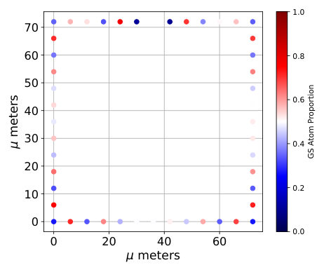
<figcaption class="paper-figure-caption"><b>Fig 1.</b> FIG. 2: Fraction of Atoms in the Ground state. Z2 symmetry would imply that the fraction is uniformly 0.5. While this is somehow approximated by the triangular case, the square case shows persistence of Rydberg states in the two atoms flanking the vacancy and at the vertices.</figcaption>
</figure>
<figure class="paper-figure-card">
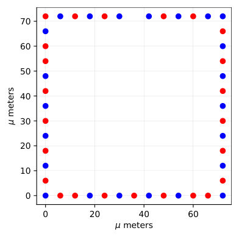
<figcaption class="paper-figure-caption"><b>Fig 2.</b> FIG. 1: The two systems under study. The position of atoms (dots) as programmed on Aquila for the contigu- ous triangle outline (top), with 33 atoms, and for the square outline (bottom), with 47 atoms, and an intentional atom vacancy at the top. The axes correspond to real physi- cal space positions, in micrometers. The distance between atoms is 6 micrometers. Besides the vacancy, the two sys- tems differ at the corners: in the square configuration there are atoms at the corners, but they are absent in the triangu- lar configuration. Both of these atom layouts use the max- imum amount of space that the Aquila processor supports, and the atom layouts are restricted to a planar region of...</figcaption>
</figure>
<figure class="paper-figure-card">
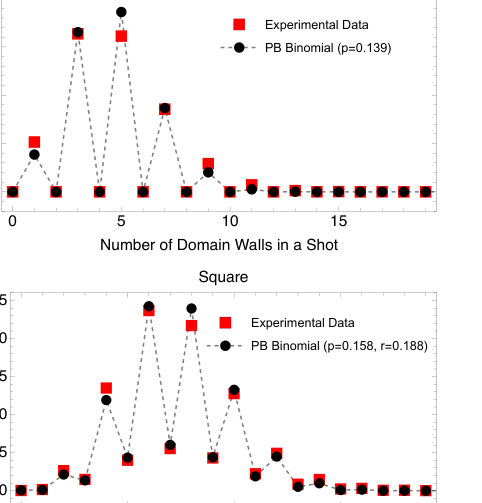
<figcaption class="paper-figure-caption"><b>Fig 3.</b> FIG. 3: Domain-wall statistics. Frequencies of shots vs. number of domain walls in a shot for the triangular (top) and square (bottom) arrangements. In red squares we re- port the data, and in black dots the corresponding Gibbs distribution.</figcaption>
</figure>
<figure class="paper-figure-card">
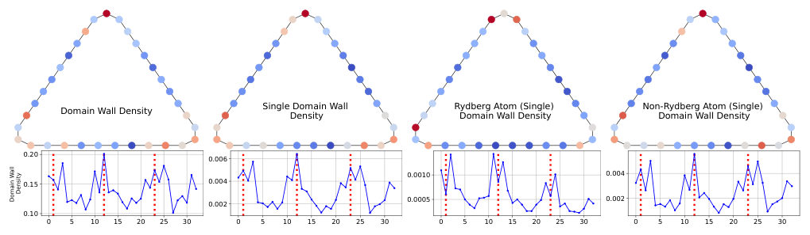
<figcaption class="paper-figure-caption"><b>Fig 4.</b> FIG. 4: Antiferromagnetic domain wall density on the Aquila device on a PBC ring with 33 atoms. The top row shows graph representations of the domain wall densities where red denotes higher density, blue denotes lower den- sity, and each node position encodes the median position of the bond between two atoms. Top-left: density of all domain walls where each node represents a bond in the 1D model, middle-left: post-selected samples with only a single domain wall, middle-right: count of Rydberg atom (single) domain wall densities, right: count of ground state atom (single) domain wall densities. Due to geometric frustration and the PBCs there is always at least one pinned domain wall...</figcaption>
</figure>
<figure class="paper-figure-card">
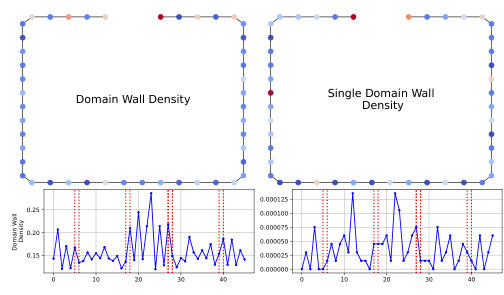
<figcaption class="paper-figure-caption"><b>Fig 5.</b> FIG. 5: Domain wall densities on the 47-atom 1D square outline simulations with an intentional atom vacancy. The vertical dashed lines denote the (two) bonds that form the angles in the square. The two center bonds in this plot correspond to the two bonds on either side of the engineered atom vacancy; the site of the missing atom is not counted as a bond in the data.</figcaption>
</figure>
</div>

<p><strong>Summary.</strong> The authors experimentally explore domain wall physics in Rydberg arrays using a neutral-atom quantum computer. By comparing closed triangular versus open square geometries, they demonstrate that geometric features like corners and vacancies induce strong local interactions. These effects lead to measurable symmetry breaking and pinning of topological defects, proving that the physical realization significantly modifies the underlying theoretical model.</p>
<p><strong>Why it may be interesting.</strong> This work provides direct experimental evidence of how engineered disorder or boundary conditions in quantum simulators can fundamentally alter the ground state properties and symmetries predicted by idealized 1D models, which is crucial for understanding real-world quantum hardware limitations.</p>
<details>
<summary>Detailed structure</summary>
<p><strong>Main problem.</strong> The study investigates how geometric constraints on a Rydberg array induce domain-wall pinning and break $\mathbb{Z}_2$ symmetry in nominally one-dimensional quantum spin models.</p>
<p><strong>Main result.</strong> The geometry dictates the physics, leading to non-uniform domain wall pinning at corners (triangle) or around engineered vacancies (square), and causing an observable imbalance favoring certain types of domain walls ($ ext{|gg}
angle   ext{DWs}$ over $    ext{|rr}
angle   ext{DWs}$).</p>
<p><strong>Method.</strong> The researchers used quasi-adiabatic evolution protocols on a neutral-Rydberg-atom quantum computer to sample the ground state configurations of an effective Ising-like Hamiltonian.</p>
<p><strong>Model / system.</strong> The system is realized using QuEra's neutral-Rydberg-atom Aquila platform, simulating 1D chains (triangular and square outlines) governed by Rydberg blockade interactions ($V_{jk} \propto 1/r^6$).</p>
<p><strong>Key observables.</strong> Domain wall number statistics (analyzed via Parity Biased Binomial distributions), site-resolved magnetization profiles, and the relative counts of different domain wall types ($ ext{|gg}
angle$ vs $ ext{|rr}
angle$).</p>
<p><strong>Important parameters / regimes.</strong> The geometry (closed triangle vs. open square with vacancy) is critical; NNN interactions are significantly stronger at corners compared to edges.</p>
<p><strong>Assumptions / limitations.</strong> The analysis assumes the system can be effectively modeled by an Ising-like Hamiltonian in a restricted subspace, and that finite-time ramping introduces non-adiabatic errors.</p>
<p><strong>Figures summary.</strong> Figures illustrate atomic arrangements on the processor for both geometries; Figure 3 compares measured domain-wall statistics against theoretical distributions; Figures 4 and 5 map out site-resolved domain wall densities showing corner/vacancy effects.</p>
<p><strong>Paper structure.</strong> The paper details experimental setups on two specific 1D geometries, analyzes domain-wall statistics using specialized distributions, and contrasts the observed pinning and symmetry breaking mechanisms between the closed (triangular) and open (square) boundaries.</p>
</details>
<details>
<summary>Abstract</summary>
<p>We perform experiments on QuEra's neutral-Rydberg-atom Aquila quantum computer, using quasi-adiabatic evolution on 1-dimensional models. We use hardware fine-tuning to balance the measurement statistics close to zero net magnetization, in two different geometric outlines: one closed triangular model with 33 atoms, and one 47-atom square with an engineered atom vacancy. The nature of this processor restricts the geometry of the atoms that can be programmed to a 2D plane. We report effects not predicted by the pure 1D Ising model, such as pinning of domain walls and $\mathbb{Z}_2$ symmetry breaking due to the interplay between van der Waals interactions and the Rydberg blockade. In particular, atoms around the atom vacancy and at the vertices of the 1-dimensional square-outline model strongly prefer the Rydberg state, leading to the effective model having a ferromagnetic bond across the vacancy.</p>
</details>
<p><sub><a href="#top">↑ back to top</a></sub></p>

<p><a id="paper-2607.27740"></a></p>
<h3 id="non-reciprocity-drives-a-brownian-dimer-out-of-equilibrium"><a href="http://arxiv.org/abs/2607.27740v1">Non-reciprocity drives a Brownian dimer out of equilibrium</a></h3>
<p><strong>Authors:</strong> Suman Pramanik, Soham Dutta, Arnab Saha<br>
<strong>Type:</strong> theory · <strong>Category:</strong> statistical mechanics · <strong>PDF:</strong> <a href="https://arxiv.org/pdf/2607.27740v1">https://arxiv.org/pdf/2607.27740v1</a><br>
<strong>Analysis basis:</strong> full PDF text, analyzed in chunks
<strong>Topic relevance:</strong> 🔥 <code>non-equilibrium dynamics</code> <strong>5/5</strong> · 🔥 <code>non-equilibrium universality</code> <strong>4/5</strong> · <code>driven-dissipative phase transition</code> <strong>3/5</strong> · <code>methods for driven-dissipative</code> <strong>3/5</strong> · <code>Frenkel-Kontorova</code> <strong>1/5</strong> · <code>Keldysh / 2PI / non-Gaussian methods</code> <strong>1/5</strong> · <code>correlated / nonlocal dissipation</code> <strong>1/5</strong></p>
<div class="figure-strip-hint">↔ Scroll figures horizontally</div>
<div class="paper-figures-scroll">
<figure class="paper-figure-card">
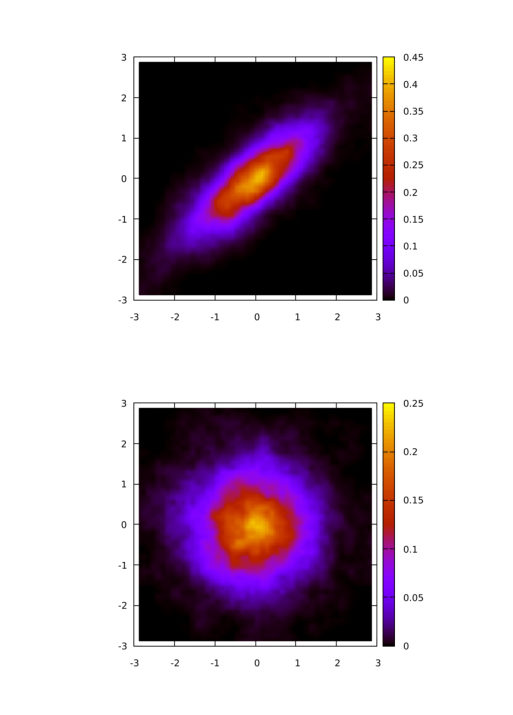
<figcaption class="paper-figure-caption"><b>Fig 1.</b> FIG. 1. Heatmap of the joint probability distribution of two variates, obtained by numerically integrating the Langevin equations (for l = 0): Top — P(x1, x2) [identical for {y1, y2}], Bottom — P(x1, y1) [identical for {x1, y2}, etc.]. Note the distinctly different spread and alignment of the two distribution profiles. This is simply because:P(x1, y1) = R dx2dy2P(x1, x2, y1, y2) = R dx2dy2P(x1, x2)P(y1, y2) = R dx2P(x1, x2) R dy2P(y1, y2) = P(x1)P(y1), and so on. However, this is not true for P(x1, x2) or P(y1, y2). The color scale indicates the value of probability. The values of the pa- rameters used in simulation are: k0 = 1, T = 1, γ = 1, k1 = 1, k2 = 5.</figcaption>
</figure>
<figure class="paper-figure-card">
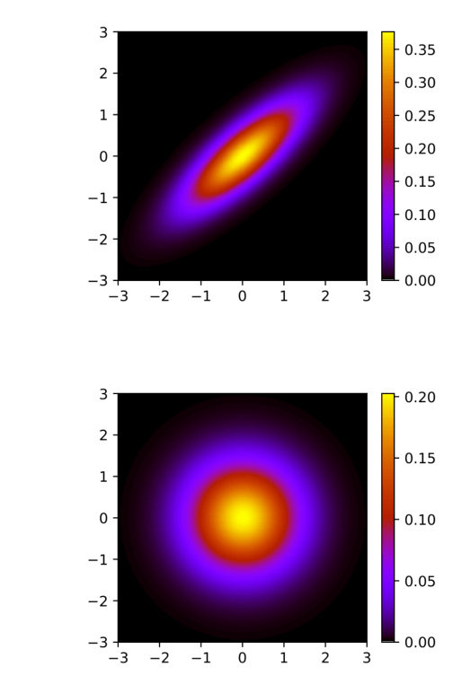
<figcaption class="paper-figure-caption"><b>Fig 2.</b> FIG. 2. Analytical counterpart of Fig. 1, obtained from the closed-form Gaussian distribution P(x1, x2) from Eq. (8), and its marginal distribution P(x1, y1) = P(x1)P(y1) (for l = 0): Top — P(x1, x2) [identical for {y1, y2}], Bottom — P(x1, y1) [identical for {x1, y2}, etc.]. Same color scale, axis range, and layout are kept as Fig. 1, to allow a direct visual comparison with the simulation. Parameter values are: k0 = 1, T = 1, γ = 1, k1 = 1, k2 = 5.</figcaption>
</figure>
<figure class="paper-figure-card">
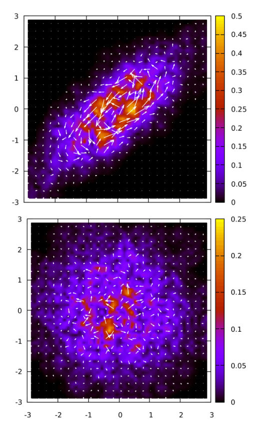
<figcaption class="paper-figure-caption"><b>Fig 3.</b> FIG. 3. Heatmap of the magnitude of current of two variates with an overlay of the stream plot of the current vector, ob- tained by numerically integrating the Langevin equations (for l = 0): Top — in the {x1, x2} plane [identical for {y1, y2}], Bottom — in the {x1, y1} plane [identical for {x1, y2}, etc.]. Note the absence of vorticity in the latter case. This implies the average current is non-zero in x1 −x2 (or, y1 −y2) plane but zero in x1 −y1 (or, x2, y2) plane. The color scale indicates the magnitude of current, while the white arrows point in its direction. The parameter values used in simulation are kept the same as before.</figcaption>
</figure>
<figure class="paper-figure-card">
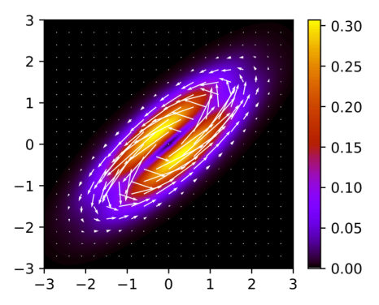
<figcaption class="paper-figure-caption"><b>Fig 4.</b> FIG. 4. Analytical counterpart of the top panel of Fig. 3, obtained from the closed-form current in Eqs. (10)-(11) (for l = 0) — Plot of J(x1, x2) [identical for {y1, y2}], with white arrows showing the exact current direction. Same color scale, axis range, and layout are kept as Fig. 3. Parameter values are: k0 = 1, T = 1, γ = 1, k1 = 1, k2 = 5.</figcaption>
</figure>
<figure class="paper-figure-card">
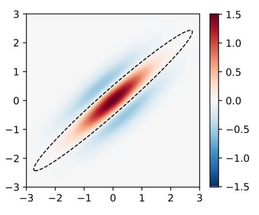
<figcaption class="paper-figure-caption"><b>Fig 5.</b> FIG. 5. Analytical local vorticity S(x1, x2) = (∇× J)z (for l = 0), obtained from Eq. (14), showing the central vortex core surrounded by a ring of opposite-sign vorticity (dashed line is the zero-vorticity contour, Q(x1, x2) = ∆(p + r)). Parameter values are: k0 = 1, T = 1, γ = 1, k1 = 1, k2 = 5.</figcaption>
</figure>
</div>

<p><strong>Summary.</strong> The authors investigate the steady-state dynamics of a Brownian dimer coupled by a non-reciprocal spring. They prove that breaking Newton's action-reaction principle alone is sufficient to generate a persistent current, driving the system far from equilibrium without external temperature gradients. The methodology involves advanced statistical mechanics techniques applied to Langevin dynamics.</p>
<p><strong>Why it may be interesting.</strong> This work provides a clean theoretical demonstration of how microscopic violations of fundamental symmetries (like action-reaction) can lead to macroscopic, persistent non-equilibrium phenomena in condensed matter systems, which is highly relevant for understanding energy dissipation and transport in complex materials.</p>
<details>
<summary>Detailed structure</summary>
<p><strong>Main problem.</strong> To determine if a system can reach a non-equilibrium steady state, characterized by a persistent current or directed motion, solely due to internal non-reciprocal interactions without external driving forces like temperature gradients.</p>
<p><strong>Main result.</strong> Non-reciprocity in the coupling spring is sufficient to generate a non-zero stationary current ($\mathbf{J} \propto (k_2 - k_1)$), demonstrating that breaking Newton's action-reaction principle can drive a system out of equilibrium even at constant temperature.</p>
<p><strong>Method.</strong> The analysis uses overdamped Langevin equations and the Fokker-Planck formalism to calculate the steady-state probability distribution, current ($\mathbf{J}$), and vorticity (curl of $\mathbf{J}$).</p>
<p><strong>Model / system.</strong> A two-dimensional Brownian dimer consisting of two overdamped monomers trapped in an isotropic harmonic potential and coupled by a non-reciprocal harmonic spring. The analysis covers the analytically solvable zero-rest-length limit ($l=0$) and extends to finite rest lengths.</p>
<p><strong>Key observables.</strong> Steady-state current ($\mathbf{J}$), local vorticity (curl of $\mathbf{J}$), and the stationary joint probability distribution $P(x_1, x_2)$.</p>
<p><strong>Important parameters / regimes.</strong> Non-reciprocity strength ($k_1 
eq k_2$), temperature difference/bath coupling ($T_1$ vs $T_2$), and spring rest length ($l$).</p>
<p><strong>Assumptions / limitations.</strong> The analysis relies on the linear dynamics derived from the Langevin equations for the $l=0$ case, and uses matrix methods (Lyapunov equation) to find stationary solutions.</p>
<p><strong>Figures summary.</strong> Figures illustrate joint probability distributions showing non-factorizable correlations due to non-reciprocity, and visualize the vorticity structure, which exhibits a central vortex core surrounded by an anti-vortex ring when currents are present.</p>
<p><strong>Paper structure.</strong> The paper systematically analyzes the current generation mechanism by first establishing the general framework using the Fokker-Planck equation for linear systems ($l=0$). It then shows that non-reciprocity alone generates current, and finally generalizes this to include temperature gradients, demonstrating the interchangeability of these two symmetry-breaking mechanisms.</p>
</details>
<details>
<summary>Abstract</summary>
<p>We consider the minimal model of a two dimensional Brownian dimer consisting of two overdamped monomers, trapped in an isotropic harmonic potential and mutually coupled by a non-reciprocal harmonic spring that violates Newton's action-reaction principle. We have shown that the non-reciprocal interaction alone can drive the system far from equilibrium, in the absence of any external time dependent drive and being in contact with a single thermal bath. The exact steady state probability distribution and current are explicitly calculated for the zero-rest-length limit of the spring, which eventually maps our model to another non-equilibrium phenomenon, called Brownian gyration. For a spring with finite rest length, these quantities are calculated numerically.</p>
</details>
<p><sub><a href="#top">↑ back to top</a></sub></p>

<p><a id="paper-2607.27878"></a></p>
<h3 id="beating-the-bad-cavity-limit-via-auxiliary-emitter-linewidth-squeezing"><a href="http://arxiv.org/abs/2607.27878v1">Beating the Bad-Cavity Limit via Auxiliary-Emitter Linewidth Squeezing</a></h3>
<p><strong>Authors:</strong> Youke Xu, Zeyang Liao, Xue-hua Wang<br>
<strong>Type:</strong> theory · <strong>Category:</strong> other · <strong>PDF:</strong> <a href="https://arxiv.org/pdf/2607.27878v1">https://arxiv.org/pdf/2607.27878v1</a><br>
<strong>Analysis basis:</strong> full PDF text, analyzed in chunks
<strong>Topic relevance:</strong> 🔥 <code>Tavis-Cummings &amp; cavity-many-emitter</code> <strong>4/5</strong> · 🔥 <code>methods for driven-dissipative</code> <strong>4/5</strong> · <code>analog quantum simulation</code> <strong>3/5</strong> · <code>correlated / nonlocal dissipation</code> <strong>3/5</strong> · <code>correlated cavity matter</code> <strong>3/5</strong> · <code>driven-dissipative phase transition</code> <strong>3/5</strong> · <code>interference shaping light</code> <strong>3/5</strong> · <code>non-equilibrium dynamics</code> <strong>2/5</strong> · <code>superradiant laser</code> <strong>2/5</strong> · <code>Dicke superradiance</code> <strong>1/5</strong> · <code>Keldysh / 2PI / non-Gaussian methods</code> <strong>1/5</strong> · <code>entanglement &amp; information structure</code> <strong>1/5</strong> · <code>non-equilibrium universality</code> <strong>1/5</strong></p>
<div class="figure-strip-hint">↔ Scroll figures horizontally</div>
<div class="paper-figures-scroll">
<figure class="paper-figure-card">
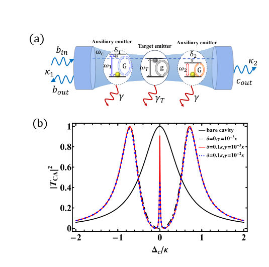
<figcaption class="paper-figure-caption"><b>Fig 1.</b> FIG. 1. (a) Schematic of linewidth reduction and strong cou- pling in a bad cavity assisted by two non-identical auxiliary emitters. (b) Transmission spectra for a bad cavity with two non-identical auxiliary emitters (detuning δ = 0.1κ). The red solid and blue dotted lines correspond to γ = 0.001κ and γ = 0.01κ, respectively. For comparison, the bare cavity and the case of two identical emitters are shown as the black solid and black dashed-dotted lines, respectively. Other parameters: G = 0.5κ.</figcaption>
</figure>
<figure class="paper-figure-card">
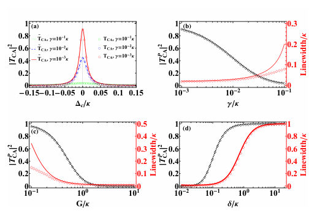
<figcaption class="paper-figure-caption"><b>Fig 2.</b> FIG. 2. (a) Central transmission peaks for a cavity with two non-identical emitters (δ1 = −δ2 = δ = 0.1κ) at three differ- ent values of γ. Empty-circles: exact results (Eq. 6); colored lines: approximate results (Eq. 7). (b-d) Transmission peak probability (black dashed line) and linewidth (red solid line) as functions of (b) γ, (c) G, and (d) δ, with fixed parameters spec- ified in each panel: (b) G = 0.5κ and δ = 0.1κ; (c) δ = 0.1κ and γ = 0.01κ; (d) G = 0.5κ and γ = 0.01κ. The black and red diamond-shaped marks denote the maximum values of the transmission probability and linewidth, respectively, obtained from Eq. (6).</figcaption>
</figure>
<figure class="paper-figure-card">
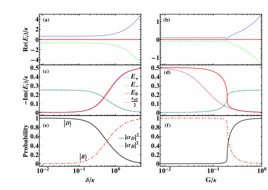
<figcaption class="paper-figure-caption"><b>Fig 3.</b> FIG. 3. The real (a,b) and imaginary (c,d) parts of the eigen- values of the hybrid system for different values of δ and G. E0 corresponds to the central peak, and the other two edge peaks correspond to E+ and E−, respectively. (e-f) The probabili- ties of the dark state component and the bright state compo- nent of the eigenstate of the central peak. Parameters: (a,c,e) γ = 0.01κ and G = 0.5κ; (b,d,f) γ = 0.01κ and δ = 0.1κ.</figcaption>
</figure>
<figure class="paper-figure-card">
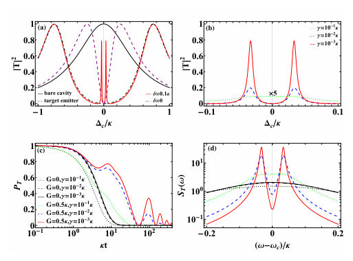
<figcaption class="paper-figure-caption"><b>Fig 4.</b> FIG. 4. (a) Transmission spectrum |T|2 of the coupled sys- tem with a target emitter with G = 0.5κ, γ = 10−3κ and g = 0.25κ. The red solid line corresponds to δ = 0.1κ, and the black dashed line to δ = 0. The black solid and purple dashed lines are the transmission spectra of the bare cavity and the cavity with a target emitter (G = 0), respectively. (b) Cen- tral transmission spectrum splitting under different values of γ where G = 0.5κ and δ = 0.1κ. The population dynamics (c) and the spontaneous emission spectrum (d) of the target emit- ter under different values of γ with g = 0.25κ and δ = 0.1κ. Other parameters: γT = γ, δ1 = −δ2 = δ and δT = 0.</figcaption>
</figure>
</div>

<p><strong>Summary.</strong> The authors propose a method to enable strong coupling physics in optical cavities that are otherwise too lossy or weakly coupled (bad cavities). They achieve this by incorporating two specially detuned auxiliary emitters, which engineer an effective subradiant mode that narrows the cavity linewidth. This allows for clear spectroscopic signatures of strong coupling, opening up practical avenues for quantum computation and sensing.</p>
<p><strong>Why it may be interesting.</strong> This work provides an elegant engineering solution to a major practical bottleneck in cavity QED—the bad-cavity limit—by manipulating the system's spectral response using auxiliary components. This has direct implications for building quantum devices.</p>
<details>
<summary>Detailed structure</summary>
<p><strong>Main problem.</strong> The primary challenge addressed is overcoming the fundamental trade-off in cavity QED where achieving strong coupling requires either high quality factors or ultrasmall mode volumes.</p>
<p><strong>Main result.</strong> By introducing two nonidentical auxiliary emitters with opposite detunings into a bad cavity, the system can engineer an ultra-narrow transmission window and achieve signatures of strong coupling (like Rabi oscillations) even when the bare cavity is in the weak-coupling regime.</p>
<p><strong>Method.</strong> The analysis uses quantum Langevin equations and eigenvalue analysis on the effective Hamiltonian to derive the transmission spectrum and characterize the resulting subradiant modes.</p>
<p><strong>Model / system.</strong> The system models a hybrid setup: a bad optical cavity coupled to two nonidentical auxiliary emitters and one target emitter. The dynamics are governed by the total Hamiltonian, analyzed via master equations or Langevin equations.</p>
<p><strong>Key observables.</strong> Effective cavity linewidth ($\kappa_{eff}$), transmission spectrum ($|T_{CA}|^2$), prolonged vacuum Rabi oscillations in the target emitter's population, and spontaneous emission spectral splitting.</p>
<p><strong>Important parameters / regimes.</strong> Auxiliary detunings ($\delta_1 = -\delta_2 = \delta$), coupling strengths ($G$, $g$), cavity decay rate ($\kappa$), and emitter decay rates ($\gamma$).</p>
<p><strong>Assumptions / limitations.</strong> Key approximations include assuming $\gamma \ll \kappa$ and analyzing the central peak using specific functional forms derived from the full system Hamiltonian.</p>
<p><strong>Figures summary.</strong> Figures illustrate schematic linewidth reduction, transmission spectra comparing different emitter configurations (bare vs. non-identical), and time evolution plots showing Rabi oscillations in target excitation probability ($P_T(t)$).</p>
<p><strong>Paper structure.</strong> The paper progresses from identifying the physical limitation to developing a theoretical model using Langevin equations, deriving analytical approximations for linewidth reduction via destructive interference, and finally demonstrating strong coupling signatures through numerical simulation of population dynamics.</p>
</details>
<details>
<summary>Abstract</summary>
<p>Strong coupling in cavity QED is conventionally achieved at the expense of either high cavity quality factors or ultrasmall mode volumes, a trade-off that fundamentally constrains practical implementations. Here, we circumvent this limitation by introducing two nonidentical auxiliary emitters with opposite detunings into a bad cavity. This hybrid system supports a subradiant mode that significantly squeeze the effective cavity linewidth, creating an ultra-narrow transmission window at the cavity frequency. As a result, a target emitter placed in this engineered environment exhibits prolonged vacuum Rabi oscillations and resolved spontaneous emission splitting, which are clear signatures of strong coupling, even though the bare cavity remains in the weak-coupling regime. Our scheme thus transforms a bad cavity into an effective platform for strong-coupling physics, with potential applications in quantum computation and quantum sensing.</p>
</details>
<p><sub><a href="#top">↑ back to top</a></sub></p>

<p><a id="paper-2607.28610"></a></p>
<h3 id="learning-arbitrary-lindbladians-from-time-evolution"><a href="http://arxiv.org/abs/2607.28610v1">Learning Arbitrary Lindbladians from Time Evolution</a></h3>
<p><strong>Authors:</strong> Zhili Chen, Zhan Yu<br>
<strong>Type:</strong> theory · <strong>Category:</strong> quantum information and computing · <strong>PDF:</strong> <a href="https://arxiv.org/pdf/2607.28610v1">https://arxiv.org/pdf/2607.28610v1</a><br>
<strong>Analysis basis:</strong> full PDF text, analyzed in chunks
<strong>Topic relevance:</strong> 🔥 <code>methods for driven-dissipative</code> <strong>4/5</strong> · <code>Keldysh / 2PI / non-Gaussian methods</code> <strong>3/5</strong> · <code>correlated / nonlocal dissipation</code> <strong>3/5</strong> · <code>driven-dissipative phase transition</code> <strong>3/5</strong> · <code>measurement-induced transitions</code> <strong>2/5</strong> · <code>non-equilibrium dynamics</code> <strong>2/5</strong> · <code>non-equilibrium universality</code> <strong>2/5</strong> · <code>quantum measurements</code> <strong>2/5</strong> · <code>Kondo &amp; dissipative impurity</code> <strong>1/5</strong> · <code>analog quantum simulation</code> <strong>1/5</strong> · <code>entanglement &amp; information structure</code> <strong>1/5</strong> · <code>scars &amp; prethermalization</code> <strong>1/5</strong></p>
<div class="figure-strip-hint">↔ Scroll figures horizontally</div>
<div class="paper-figures-scroll">
<figure class="paper-figure-card">
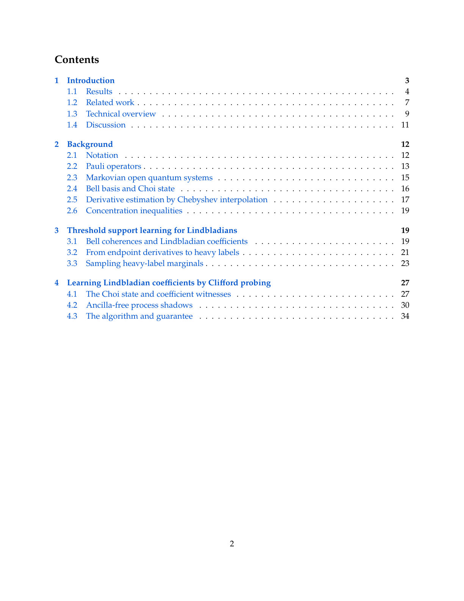
<figcaption class="paper-figure-caption"><b>Fig 1.</b> Low-resolution page preview, page 2</figcaption>
</figure>
<figure class="paper-figure-card">
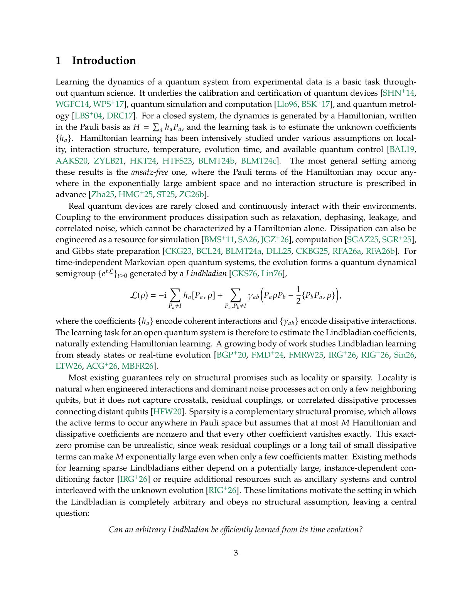
<figcaption class="paper-figure-caption"><b>Fig 2.</b> Low-resolution page preview, page 3</figcaption>
</figure>
<figure class="paper-figure-card">
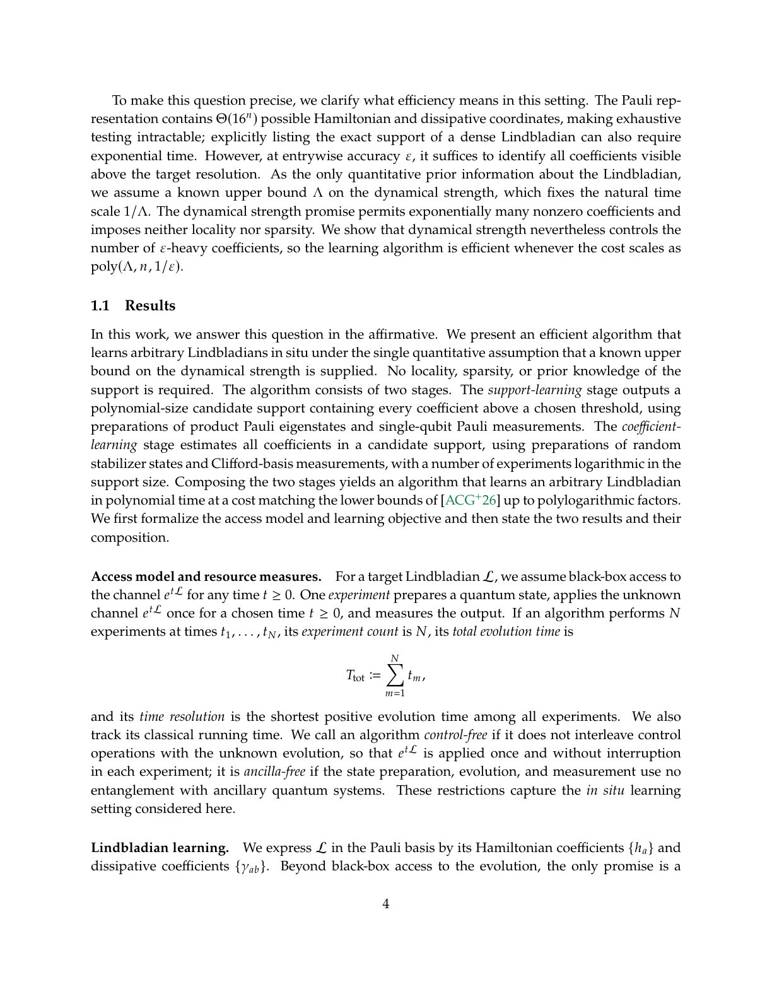
<figcaption class="paper-figure-caption"><b>Fig 3.</b> Low-resolution page preview, page 4</figcaption>
</figure>
<figure class="paper-figure-card">
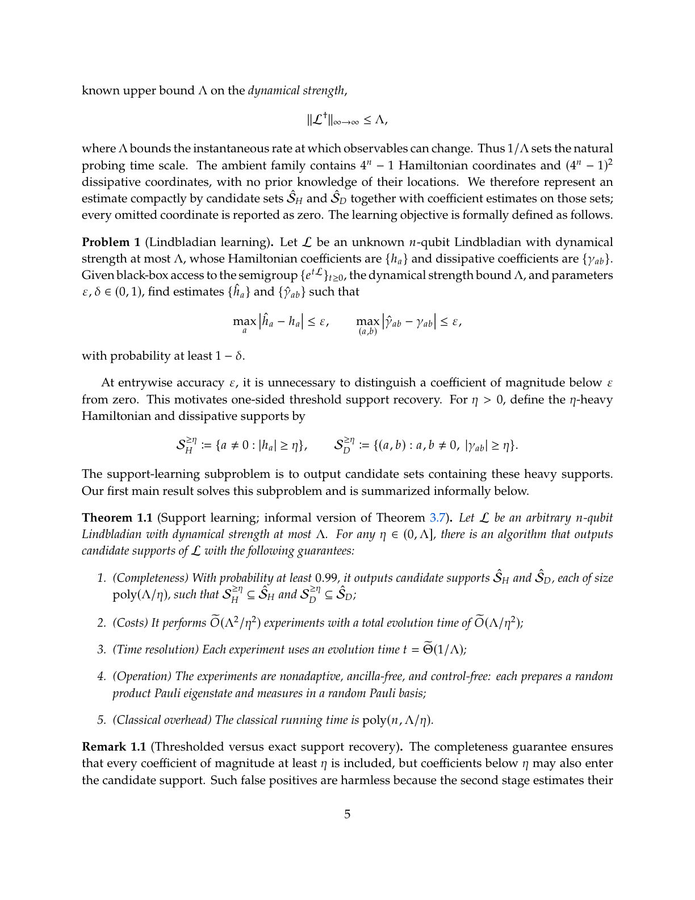
<figcaption class="paper-figure-caption"><b>Fig 4.</b> Low-resolution page preview, page 5</figcaption>
</figure>
<figure class="paper-figure-card">
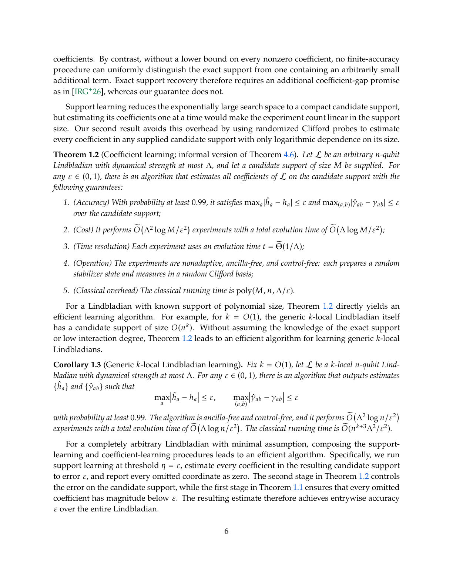
<figcaption class="paper-figure-caption"><b>Fig 5.</b> Low-resolution page preview, page 6</figcaption>
</figure>
</div>

<p><strong>Summary.</strong> This paper presents an efficient algorithm to reconstruct the full Lindbladian generator of an open quantum system solely by measuring its time evolution. By breaking the problem into identifying relevant coefficients (support learning) and then estimating their values, the authors achieve resource scalings that match theoretical lower bounds for arbitrary dynamics.</p>
<p><strong>Why it may be interesting.</strong> This work provides a powerful theoretical tool to characterize complex quantum dynamics (open systems) when direct Hamiltonian measurement is impossible, which is crucial for interpreting experimental results from trapped ions or superconducting qubits.</p>
<details>
<summary>Detailed structure</summary>
<p><strong>Main problem.</strong> The core problem is learning an unknown Markovian open-system generator (Lindbladian) entirely from access to its physical time evolution measurements.</p>
<p><strong>Main result.</strong> The authors propose an efficient, nearly optimal algorithm that can estimate every coefficient of an arbitrary Lindbladian in polynomial time relative to the dynamical strength bound ($\Lambda$) and required accuracy ($\epsilon$).</p>
<p><strong>Method.</strong> The algorithm is structured in two stages: first, a support-learning stage identifies candidate coefficients above a threshold $\eta$, followed by a coefficient-learning stage estimates these candidates using random stabilizer states.</p>
<p><strong>Model / system.</strong> The system involves open quantum systems whose dynamics are governed by a Lindbladian master equation. The coefficients include Hamiltonian terms $\{h_a\}$ and dissipative terms $\{\gamma_{ab}\}$, indexed by Pauli operators.</p>
<p><strong>Key observables.</strong> Lindbladian coefficients ($\{h_a\}, \{\gamma_{ab}\}$), time evolution $e^{t\mathcal{L}}$, and measurement outcomes from product Pauli eigenstates or random stabilizer states.</p>
<p><strong>Important parameters / regimes.</strong> Dynamical strength bound $\Lambda$, desired accuracy $\epsilon$, and the support recovery threshold $\eta$.</p>
<p><strong>Assumptions / limitations.</strong> The only prior information is an upper bound $\Lambda$ on the dynamical strength of the Lindbladian. The method assumes access to nonadaptive, ancilla-free, control-free time evolution measurements.</p>
<p><strong>Figures summary.</strong> Not specified in the provided notes; the results are summarized by resource scaling comparisons (Table 1) showing polynomial dependence on $\Lambda/\epsilon$.</p>
<p><strong>Paper structure.</strong> The paper establishes the problem of Lindbladian learning and presents a two-stage algorithm: Theorem 1.1 details the support-learning stage, followed by Theorem 1.2 for coefficient estimation, culminating in a corollary that combines both stages for arbitrary Lindbladians.</p>
</details>
<details>
<summary>Abstract</summary>
<p>We study the problem of learning an unknown Markovian open-system generator from access to its physical time evolution. This generator, called a Lindbladian, contains Hamiltonian and dissipative coefficients indexed by an exponentially large family of possible Pauli terms. We propose an efficient algorithm that learns arbitrary Lindbladians from time evolution under minimal assumptions. For a Lindbladian of dynamical strength at most $Λ$, the algorithm estimates every coefficient to error $ε$ using $\widetilde O(Λ^2/ε^2)$ experiments and $\widetilde O(Λ/ε^2)$ total evolution time, together with polynomial classical running time. The algorithm consists of two nonadaptive, ancilla-free, and control-free stages: 1. The support-learning stage outputs a candidate support of size $\mathrm{poly}(Λ/η)$ that contains every Hamiltonian and dissipative coordinate of magnitude at least $η$, using $\widetilde O(Λ^2/η^2)$ experiments with preparations of product Pauli eigenstates and single-qubit Pauli measurements. 2.The coefficient-learning stage estimates all coefficients in any candidate support of size $M$ to error $ε$, using $\widetilde O(Λ^2\log M/ε^{2})$ experiments with preparations of random stabilizer states and measurements in random Clifford bases. Composing the two stages identifies and estimates every coefficient of an arbitrary Lindbladian in polynomial time. The experiment-count and total-evolution-time scalings match the lower bounds up to logarithmic factors, so the algorithm is nearly optimal for learning arbitrary Lindbladians.</p>
</details>
<p><sub><a href="#top">↑ back to top</a></sub></p>

<p><a id="paper-2607.27985"></a></p>
<h3 id="bridging-continuous-control-and-floquet-driving-for-charging-many-body-spin-chains"><a href="http://arxiv.org/abs/2607.27985v1">Bridging continuous control and Floquet driving for charging many-body spin chains</a></h3>
<p><strong>Authors:</strong> Sebastián V. Romero, Xi Chen, Yue Ban<br>
<strong>Type:</strong> theory · <strong>Category:</strong> statistical mechanics · <strong>PDF:</strong> <a href="https://arxiv.org/pdf/2607.27985v1">https://arxiv.org/pdf/2607.27985v1</a><br>
<strong>Analysis basis:</strong> full PDF text, analyzed in chunks
<strong>Topic relevance:</strong> 🔥 <code>non-equilibrium dynamics</code> <strong>4/5</strong> · <code>analog quantum simulation</code> <strong>3/5</strong> · <code>driven-dissipative phase transition</code> <strong>3/5</strong> · <code>exotic spin models in light-matter</code> <strong>3/5</strong> · <code>entanglement &amp; information structure</code> <strong>2/5</strong> · <code>methods for driven-dissipative</code> <strong>2/5</strong> · <code>non-equilibrium universality</code> <strong>2/5</strong> · <code>Frenkel-Kontorova</code> <strong>1/5</strong> · <code>Keldysh / 2PI / non-Gaussian methods</code> <strong>1/5</strong> · <code>correlated / nonlocal dissipation</code> <strong>1/5</strong> · <code>scars &amp; prethermalization</code> <strong>1/5</strong></p>
<div class="figure-strip-hint">↔ Scroll figures horizontally</div>
<div class="paper-figures-scroll">
<figure class="paper-figure-card">
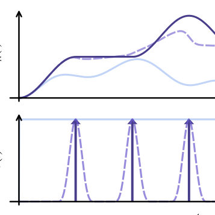
<figcaption class="paper-figure-caption"><b>Fig 1.</b> Fig. 1 Schematic of an Ising-chain QB bridging continuously driven and periodically kicked transverse- field charging protocols. From lighter to darker blue, the injected energy in a QB (top) under charging protocols with decreasing pulse width (bottom). While a continuous drive (represented by a constant line) yields a poor performance, a periodically-kicked pulse (depicted with arrows) reaches maximal charging without fluctuations. Between these two limiting cases, a finite-width periodic pulse coined as quasikick [42] (dashed line), displays a performance lying between both limit regimes.</figcaption>
</figure>
<figure class="paper-figure-card">
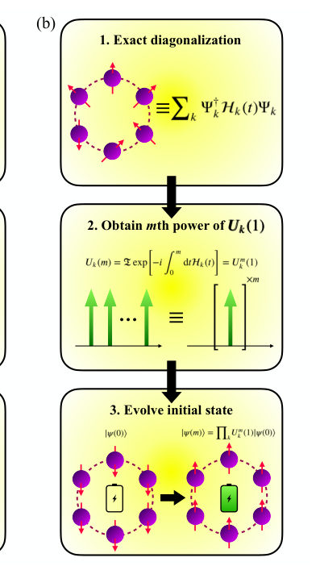
<figcaption class="paper-figure-caption"><b>Fig 2.</b> Fig. 2 Analytical methods derived for the KIC QB. (a) For the Clifford quantum cellular automata: 1) at the self-dual point, the system exhibits a Clifford structure, where Clifford conjugation maps Pauli strings to Pauli strings (see (8)); 2) apply repeatedly the Clifford conjugation 𝑈(1) in (7) to each cell, whose Heisenberg picture feature a ballistic operator growth, and 3) since the initial state is a product state, the energy injected is a sum of measured time-evolved cells per site. (b) To solve the kicked-Ising model in momentum space: 1) diagonalize the system by applying consecutively the Jordan-Wigner transformation and Fourier transform, 2) integrate the resulting Bogoliubov-de...</figcaption>
</figure>
<figure class="paper-figure-card">
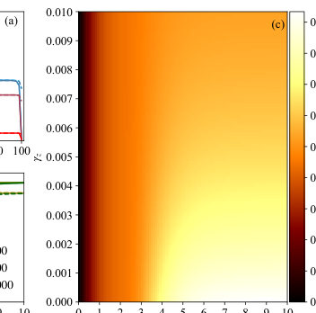
<figcaption class="paper-figure-caption"><b>Fig 3.</b> Fig. 3 Injected energies computed with initial TFIM at (𝐽th, ℎth) = (1/2, 1) and evolved at the self- dual point. (a) Evolution up to 𝑚= 100 kicks for 𝑁= 100 spins with 𝛾𝑧= 0.005. Results are displayed for different 𝛽values, ranging from high (red) to low (blue) temperature regimes. (b) Injected energies at 𝑚= 𝑁/2 using 𝛾𝑧= 1/10𝑁for various temperatures and system sizes, ranging from smaller (olive) to larger (green) setups. (c) For 𝑁= 100, injected energies at 𝑚= 𝑁/2 kicks for different (𝛽, 𝛾𝑧) pairs. Dashed (solid) curves include (discard) dephasing.</figcaption>
</figure>
<figure class="paper-figure-card">
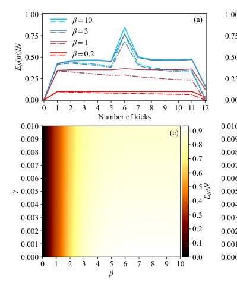
<figcaption class="paper-figure-caption"><b>Fig 4.</b> Fig. 4 (a) Injected energies (solid curves) and ergotropies (dash-dotted) in the presence of dephasing with 𝛾𝑧= 0.01 up to 𝑚= 12 kicks for a KIC of 𝑁= 12 spins. The initial TFIM is set with (𝐽th, ℎth) = (1/2, 1) and the system evolves under the self-dual point. (b) Same as (a) but for different system sizes 𝑁and 𝛽values, evaluated at 𝑚= 𝑁/2. (c) Injected energies at 𝑚= 𝑁/2 for various (𝛽, 𝛾𝑧) pairs, with 𝑁= 12. (d) Same as (c) but for the ergotropy.</figcaption>
</figure>
<figure class="paper-figure-card">
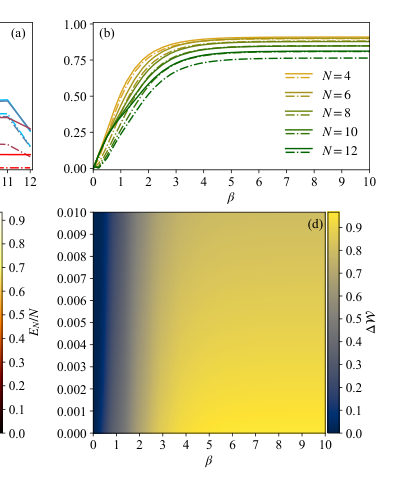
<figcaption class="paper-figure-caption"><b>Fig 5.</b> Fig. 5 (a) Injected energies (solid curves) and ergotropies (dash-dotted) in the presence of thermal dissipation with 𝛾= 0.01 up to 𝑚= 12 kicks for a KIC of 𝑁= 12 spins. The initial TFIM is set with (𝐽th, ℎth) = (1/2, 1) and the system evolves under the self-dual point. (b) Same as (a) but for different system sizes 𝑁and 𝛽values, evaluated at 𝑚= 𝑁/2. (c) Injected energies at 𝑚= 𝑁/2 for various (𝛽, 𝛾) pairs, with 𝑁= 12. (d) Same as (c) but for the ergotropy.</figcaption>
</figure>
</div>

<p><strong>Summary.</strong> This work reviews the concept of quantum batteries, focusing on how many-body spin chains can store energy beyond classical limits. It develops a theoretical framework connecting continuous external driving to discrete Floquet driving protocols using models like the kicked-Ising chain. The paper is significant for understanding achievable quantum enhancements in energy storage devices.</p>
<p><strong>Why it may be interesting.</strong> It directly addresses non-equilibrium thermodynamics and energy storage in quantum systems, bridging concepts from quantum information (coherence) with condensed matter dynamics (spin chains).</p>
<details>
<summary>Detailed structure</summary>
<p><strong>Main problem.</strong> The paper reviews quantum batteries (QBs) and establishes a theoretical connection between continuous control and periodically driven Floquet systems for enhancing energy storage.</p>
<p><strong>Main result.</strong> Quantum effects, particularly those leveraging coherence in spin chains, can lead to superextensive scaling of charging power beyond classical limits. The framework connects these two driving regimes via the kicked-Ising model.</p>
<p><strong>Method.</strong> The authors use theoretical analysis involving time evolution operators (Floquet formalism) and diagnostic tools like ergotropy to quantify energy storage capabilities.</p>
<p><strong>Model / system.</strong> The primary system is many-body spin chains modeled as quantum batteries, utilizing Hamiltonians for both the battery ($H_b$) and the charging mechanism ($H_c$). Specific models include the Ising chain and SYK models.</p>
<p><strong>Key observables.</strong> Quantum Charging Advantage (Superextensive Scaling $P(	au^*) \sim N^{1+\ell}$), Ergotropy, Maximum Mean Charging Power $P(	au)$.</p>
<p><strong>Important parameters / regimes.</strong> Interaction range ($g_{ij}$ decay), anisotropy ($\alpha$), and the nature of driving (continuous vs. periodic/kicked).</p>
<p><strong>Assumptions / limitations.</strong> The analysis often assumes an infinite energy reservoir for charging protocols, and the comparison between continuous and Floquet limits is central.</p>
<p><strong>Figures summary.</strong> Figure 1 schematically compares the performance of a spin-chain QB under continuous driving versus optimal periodic kicking (quasikick).</p>
<p><strong>Paper structure.</strong> The paper reviews existing QB protocols, develops the connection between continuous control and Floquet engineering using spin chains, analyzes scaling laws based on interaction range, and concludes by surveying experimental realizations.</p>
</details>
<details>
<summary>Abstract</summary>
<p>Recent advances in quantum information and quantum thermodynamics have reshaped the understanding of energy storage at the microscopic scale, paving the way toward protocols for storing and transferring energy in quantum devices. These systems, known as quantum batteries, offer a conceptual alternative to conventional macroscopic chemical batteries by exploiting quantum coherence, correlations, and many-body dynamics. By navigating the landscape of established spin-based quantum batteries, we review existing charging and work-extraction protocols, as well as the impact of external factors on their performance. Motivated by Floquet-engineered proposals, we further establish a connection between continuously and periodically driven spin chains as platforms for quantum energy storage. Finally, we survey experimental realizations and proposals, highlighting their implementability and scalability in current and near-term quantum technologies.</p>
</details>
<p><sub><a href="#top">↑ back to top</a></sub></p>

<p><a id="paper-2607.27771"></a></p>
<h3 id="quantum-magnonics-quantum-states-generation-and-applications"><a href="http://arxiv.org/abs/2607.27771v1">Quantum Magnonics: Quantum States Generation and Applications</a></h3>
<p><strong>Authors:</strong> Zi-Xu Lu, Xuan Zuo, Xin-Lei Hei, Gang Liu, Zeng-Xing Liu, Qi Guo, Peng-Bo Li, Jie Li<br>
<strong>Type:</strong> both · <strong>Category:</strong> quantum information and computing · <strong>PDF:</strong> <a href="https://arxiv.org/pdf/2607.27771v1">https://arxiv.org/pdf/2607.27771v1</a><br>
<strong>Analysis basis:</strong> full PDF text, analyzed in chunks
<strong>Topic relevance:</strong> 🔥 <code>spintronics-quantum-optics interface</code> <strong>4/5</strong> · <code>analog quantum simulation</code> <strong>3/5</strong> · <code>entanglement &amp; information structure</code> <strong>3/5</strong> · <code>exotic spin models in light-matter</code> <strong>3/5</strong> · <code>Tavis-Cummings &amp; cavity-many-emitter</code> <strong>2/5</strong> · <code>quantum optics experiment</code> <strong>2/5</strong> · <code>QC/QI experiment</code> <strong>1/5</strong> · <code>correlated / nonlocal dissipation</code> <strong>1/5</strong> · <code>correlated cavity matter</code> <strong>1/5</strong> · <code>driven-dissipative phase transition</code> <strong>1/5</strong> · <code>methods for driven-dissipative</code> <strong>1/5</strong> · <code>non-equilibrium dynamics</code> <strong>1/5</strong></p>
<div class="figure-strip-hint">↔ Scroll figures horizontally</div>
<div class="paper-figures-scroll">
<figure class="paper-figure-card">
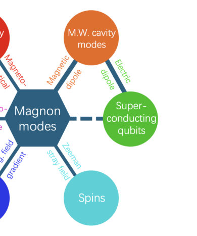
<figcaption class="paper-figure-caption"><b>Fig 1.</b> Figure 1. Hybrid systems based on magnons, including the coupling of magnon modes to microwave (M.W.) cavity modes, optical (Opt.) cavity modes, acoustic modes, the COM motion of a YIG sphere, spins, superconducting qubits, etc. Thicker lines represent stronger coupling strength achieved in current experiments. Solid lines stand for direct coupling between two subsystems, while the dashed line denotes an effective (cavity-mediated) coupling. See section 2.2 for the coupling mechanisms.</figcaption>
</figure>
<figure class="paper-figure-card">

<figcaption class="paper-figure-caption"><b>Fig 2.</b> Figure 2. (a) The (purple) gallium-doped YIG sample is cemented on top of one of the niobium microwave resonators. The experiment was performed at millikelvin temperatures. Reprinted figure (a) from [8] with permission. (b) A YIG sphere is mounted in a rectangular cavity made of oxygen-free copper. The cavity is placed inside a dilution refrigerator at 10 mK. Reprinted figure (b) from [9] with permission. (c) Top: Simulated microwave cavity TE101 mode distribution. Red arrows and colors denote the magnetic field directions and amplitudes, respectively. Bottom: Half of the microwave cavity with a YIG sphere inside. Reprinted figure (c) from [10] with permission.</figcaption>
</figure>
<figure class="paper-figure-card">

<figcaption class="paper-figure-caption"><b>Fig 3.</b> Figure 3. (a) Frequencies and linewidths of the system adopted to generate magnon–photon entanglement. (b) Cavity–magnon entanglement versus cavity-drive detuning ∆a and effective magnomechanical coupling rate Gmb (gma is fixed). Reprinted figures (a)-(b) from [21] with permission. (c) Time evolution of the excitation number N of the system, magnon–photon entanglement EN, and the fidelity of the state with the Bell state in the PT symmetry-broken phase. (d) The entanglement and fidelity versus the magnon/photon damping rate. Reprinted figures (c)-(d) from [35] with permission.</figcaption>
</figure>
<figure class="paper-figure-card">

<figcaption class="paper-figure-caption"><b>Fig 4.</b> Figure 4. (a) Two YIG spheres are placed inside a microwave cavity, each located near an antinode of the cavity field to achieve strong magnon–photon coupling. The bias magnetic fields are oriented such that the magnetostrictive interaction is activated only in one sphere, e.g., the right one. Reprinted figure (a) from [36] with permission. (b) Two YIG spheres in a microwave cavity are biased by a static magnetic field and a two-tone modulated field, respectively. Reprinted figure (b) from [44] with permission. (c) An antiferromagnet consists of two ferromagnetic sublattices with opposite magnetization directions. The two spins on the sublattices are coupled through the antiferromagnetic...</figcaption>
</figure>
<figure class="paper-figure-card">

<figcaption class="paper-figure-caption"><b>Fig 5.</b> Figure 5. (a) Variance of the magnon amplitude quadrature ⟨δx(t)2⟩versus two detunings ∆m and ∆a. Reprinted figure (a) from [47] with permission. (b) Schematic diagram of the ponderomotive-like magnon squeezing, leading to a squeezed output field of the microwave cavity. (c) Noise spectral density of the output field S out W (ω) versus frequency ω and detuning ∆a. The blank areas in (a) and (c) denote the noise above the vacuum fluctuations. Reprinted figures (b)-(c) from [48] with permission. (d) Schematic of the ferromagnet and nonmagnetic conductor bilayer. A static magnetic field H0 saturates magnetization while a coherent microwave field h0 cos ωt creates magnonic excitations. The...</figcaption>
</figure>
</div>

<p><strong>Summary.</strong> This review comprehensively surveys the field of quantum magnonics, detailing how hybrid systems couple magnons in ferromagnets to other quantum elements like photons and qubits. It outlines protocols for generating advanced quantum states—such as entangled or cat states—and discusses their potential utility in quantum sensing and information processing.</p>
<p><strong>Why it may be interesting.</strong> This work bridges condensed matter magnetism with quantum optics and information science, providing concrete pathways to engineer quantum states using solid-state magnetic excitations.</p>
<details>
<summary>Detailed structure</summary>
<p><strong>Main problem.</strong> The review surveys the experimental and theoretical progress of quantum magnonics, focusing on generating complex quantum states and exploring diverse applications.</p>
<p><strong>Main result.</strong> Strong coupling in hybrid systems allows for the preparation of various non-classical states (Fock, cat, squeezed, entangled) using magnons coupled to photons, qubits, and phonons.</p>
<p><strong>Method.</strong> The review synthesizes theoretical protocols alongside experimental demonstrations across multiple physical platforms.</p>
<p><strong>Model / system.</strong> The core system involves magnons in ferromagnetic materials (like YIG), modeled via bosonic operators derived from the Heisenberg model. These are coupled to external systems such as microwave/optical cavities, superconducting qubits, and mechanical oscillators.</p>
<p><strong>Key observables.</strong> Magnon-photon entanglement, Bell states fidelity, quantum state purity (e.g., cat states), and nonreciprocal transmission.</p>
<p><strong>Important parameters / regimes.</strong> Strong coupling regime ($g \gg \kappa, \gamma$), magnon dispersion relation ($\hbar\omega_k$), and coupling strengths ($g_{ma}, g_{mb}$).</p>
<p><strong>Assumptions / limitations.</strong> The analysis often relies on the strong coupling prerequisite for coherent control, sometimes utilizing approximations like the Rotating Wave Approximation (RWA).</p>
<p><strong>Figures summary.</strong> Figures illustrate hybrid systems coupled to various excitations (M.W., Opt., acoustic, spins, qubits) and show experimental setups for cavity magnonics.</p>
<p><strong>Paper structure.</strong> The review is structured by coupling type: microwave cavities, superconducting qubits, optical cavities, NV-center spins, and center-of-mass motion, detailing state generation protocols within each section.</p>
</details>
<details>
<summary>Abstract</summary>
<p>Hybrid systems based on magnons in ferromagnetic materials, such as yttrium iron garnet, have achieved remarkable development in the last decade. These include the coupling of magnons to microwave and optical photons, superconducting qubits, phonons, spins, the center-of-mass motion of a ferromagnet, etc. Here, we review both the experimental and theoretical progress in this field, focusing on the generation of magnonic quantum states and their applications in a broad range of fields. Since the strong coupling is a prerequisite for achieving coherent quantum control of magnons and preparing magnonic quantum states, we start by introducing representative strong-coupling experiments in cavity magnonics, then review a series of protocols for creating various magnonic quantum states, such as Fock, cat, squeezed, and entangled states, and discuss their potential applications in macroscopic quantum studies, quantum information science, quantum sensing, magnonic quantum devices, dark matter detection, and so on. Finally, we summarize the review and give an outlook for the future study of quantum magnonics.</p>
</details>
<p><sub><a href="#top">↑ back to top</a></sub></p>

<p><a id="paper-2607.27355"></a></p>
<h3 id="flat-band-formation-and-chiral-superconductivity-in-driven-topological-insulators"><a href="http://arxiv.org/abs/2607.27355v1">Flat-band formation and chiral superconductivity in driven topological insulators</a></h3>
<p><strong>Authors:</strong> Suman Jyoti De, Leo Goutte, Kartiek Agarwal, T. Pereg-Barnea<br>
<strong>Type:</strong> theory · <strong>Category:</strong> strongly correlated electrons · <strong>PDF:</strong> <a href="https://arxiv.org/pdf/2607.27355v1">https://arxiv.org/pdf/2607.27355v1</a><br>
<strong>Analysis basis:</strong> full PDF text, analyzed in chunks
<strong>Topic relevance:</strong> 🔥 <code>analog quantum simulation</code> <strong>4/5</strong> · 🔥 <code>non-equilibrium dynamics</code> <strong>4/5</strong> · <code>Keldysh / 2PI / non-Gaussian methods</code> <strong>3/5</strong> · <code>driven-dissipative phase transition</code> <strong>3/5</strong> · <code>methods for driven-dissipative</code> <strong>3/5</strong> · <code>non-equilibrium universality</code> <strong>2/5</strong> · <code>interference shaping light</code> <strong>1/5</strong></p>
<div class="figure-strip-hint">↔ Scroll figures horizontally</div>
<div class="paper-figures-scroll">
<figure class="paper-figure-card">

<figcaption class="paper-figure-caption"><b>Fig 1.</b> FIG. 1: (a) Experimental set-up. (b) Phase diagram re- flecting the superconducting critical temperature Tc and gas parameter rs at different drive amplitudes E0 and electron densities n obtained by solving the gap equa- tion for l = 1, with Eflat 0 = ℏω</figcaption>
</figure>
<figure class="paper-figure-card">

<figcaption class="paper-figure-caption"><b>Fig 2.</b> FIG. 2: (a) Dispersion of the Floquet bands with increasing electric field strength (E0). For E0 = Eflat 0 , the lowest Floquet band becomes nearly dispersionless near the Dirac point. (b) Real-space profile of screened Coulomb interac- tion and (c) radial momentum dependence of the self-consistent superconducting order parameter with orbital angular momentum ℓ= 1 at electron density n = 0.1 × 1012 cm−2 and dreg = 30 nm. Vbare(r) is the unscreened Coulomb interaction.</figcaption>
</figure>
<figure class="paper-figure-card">

<figcaption class="paper-figure-caption"><b>Fig 3.</b> FIG. 3: Comparison between bands close to flat-band limits Eflat 0 , ˜Eflat 0 ; with retaining terms up to (a) first order and (b) second order in the Floquet Hamiltonian with expansion 15. See text for the definition of Eflat 0 and ˜Eflat 0 .</figcaption>
</figure>
<figure class="paper-figure-card">

<figcaption class="paper-figure-caption"><b>Fig 4.</b> FIG. 4: (a) Superconducting critical temperature Tc,ℓ, (b) maximum of the self-consistent superconducting order ηℓ(k) at T = 0 for the angular momentum channel ℓ, with increasing electron density n for metallic gate separation dreg = 30 nm and at the flat-band limit with E0 = Eflat 0 . Blue and red lines correspond to solutions having interaction with appropriate form factors (FFs).</figcaption>
</figure>
<figure class="paper-figure-card">

<figcaption class="paper-figure-caption"><b>Fig 5.</b> FIG. 5: (a) Evolution of gas parameter rs and (b) superconducting critical temperature Tc for l = 1 with metallic gate separation dreg, from the top surface of 3D TI at the flat-band limit with E0 = Eflat 0 .</figcaption>
</figure>
</div>

<p><strong>Summary.</strong> The paper shows that using circularly polarized light can engineer flat electronic bands on topological insulators. This engineered flatness allows for the emergence of chiral topological superconductivity driven by repulsive Coulomb interactions. The theoretical framework predicts measurable superconducting critical temperatures under realistic conditions.</p>
<p><strong>Why it may be interesting.</strong> This work directly connects concepts from quantum optics (Floquet driving) and condensed matter theory (topological materials, superconductivity) to realize exotic correlated states in a controllable platform.</p>
<details>
<summary>Detailed structure</summary>
<p><strong>Main problem.</strong> The study demonstrates how circularly polarized light can engineer flat electronic bands on topological insulators to induce chiral superconductivity using purely repulsive Coulomb interactions.</p>
<p><strong>Main result.</strong> Topological superconductivity with a critical temperature of $T_c \sim 7$ K is predicted in the relevant density regime ($10^{11}-10^{12}/	ext{cm}^2$) while avoiding Wigner crystallization.</p>
<p><strong>Method.</strong> The analysis employs Floquet theory to derive an effective time-independent Hamiltonian, followed by solving a mean-field self-consistency equation for the superconducting order parameter using RPA approximations.</p>
<p><strong>Model / system.</strong> The system is the surface states of 3D Topological Insulators (TIs) driven by high-frequency, circularly polarized light. The physics is modeled via an effective Floquet Hamiltonian and treated with screened Coulomb interactions.</p>
<p><strong>Key observables.</strong> Superconducting critical temperature ($T_c$), superconducting order parameter ($\Delta(\vec{k})$ or $\eta_\ell(k)$), and the gas parameter ($r_s$).</p>
<p><strong>Important parameters / regimes.</strong> Driving field amplitude ($E_0$), electron density ($n$), gate separation ($d_{	ext{reg}}$), and the flat-band condition ($E_0 \approx E_{	ext{flat}}^0$).</p>
<p><strong>Assumptions / limitations.</strong> The analysis relies on projecting interactions into a single lower Floquet band, and approximations are made regarding projection factors in the interaction Hamiltonian.</p>
<p><strong>Figures summary.</strong> Figures illustrate the engineered flat-band dispersion (Mexican-hat shape), phase diagrams showing $T_c$ dependence on density/drive amplitude, and the superconducting order parameter profile for different driving strengths.</p>
<p><strong>Paper structure.</strong> The paper progresses by first establishing the Floquet engineering of flat bands, then calculating the effective screened interaction via RPA, and finally solving the self-consistent mean-field equations to determine the chiral superconducting pairing ($\ell=\pm 1$) and $T_c$.</p>
</details>
<details>
<summary>Abstract</summary>
<p>We demonstrate that circularly polarized light can be used to Floquet-engineer nearly flat or Mexican-hat like electronic bands on the surface of three-dimensional topological insulators (3D TIs), which under suitable conditions, can support topological superconductivity via purely repulsive Coulomb interactions. The driving acts not merely by gapping out the Dirac cone on the surface of the 3D TI, but can be used to diminish, and even flip in sign, the intrinsic curvature of the surface state dispersion away from the Dirac point. Using parameters for canonical 3D TIs, we find that the flat band limit is attained for reasonable electric fields and the bands realized by changing the strength of the driving field have a similar energetic and spatial profile to those obtained in rhombohedral graphene under varying displacement field, where the case for superconductivity with purely repulsive interactions has recently been made. We find that, with the aid of appropriately placed screening metallic gate, one can obtain $T_c \sim 7 $K in this setup while avoiding Wigner crystallization for low electron densities in the range of $10^{11}-10^{12}/\text{cm}^2$.</p>
</details>
<p><sub><a href="#top">↑ back to top</a></sub></p>

<p><a id="paper-2607.27495"></a></p>
<h3 id="information-driven-stepping-in-dimeric-transport-motors"><a href="http://arxiv.org/abs/2607.27495v1">Information-driven stepping in dimeric transport motors</a></h3>
<p><strong>Authors:</strong> Antonio Patrón Castro, David A. Sivak<br>
<strong>Type:</strong> theory · <strong>Category:</strong> statistical mechanics · <strong>PDF:</strong> <a href="https://arxiv.org/pdf/2607.27495v1">https://arxiv.org/pdf/2607.27495v1</a><br>
<strong>Analysis basis:</strong> full PDF text, analyzed in chunks
<strong>Topic relevance:</strong> 🔥 <code>non-equilibrium dynamics</code> <strong>4/5</strong> · <code>Keldysh / 2PI / non-Gaussian methods</code> <strong>3/5</strong> · <code>driven-dissipative phase transition</code> <strong>3/5</strong> · <code>methods for driven-dissipative</code> <strong>3/5</strong> · <code>entanglement &amp; information structure</code> <strong>2/5</strong> · <code>non-equilibrium universality</code> <strong>2/5</strong> · <code>Frenkel-Kontorova</code> <strong>1/5</strong> · <code>correlated / nonlocal dissipation</code> <strong>1/5</strong> · <code>quantum measurements</code> <strong>1/5</strong></p>
<div class="figure-strip-hint">↔ Scroll figures horizontally</div>
<div class="paper-figures-scroll">
<figure class="paper-figure-card">

<figcaption class="paper-figure-caption"><b>Fig 1.</b> FIG. 1. (a) Key classes of transport motors, adapted from [61].Purple circles indicate the motor domains (heads), whose motion is mod- eled via the coupled Langevin equations (1). (b) Switching-mobility model for the heads of a dimeric transport motor. The motor is rep- resented by two overdamped Brownian particles in one dimension, with positions x0 and x1, whose mobilities switch according to a dis- crete internal chemical state ν. For ν = 0, x0 evolves while x1 is fixed; for ν = 1, x1 evolves while x0 is fixed.</figcaption>
</figure>
<figure class="paper-figure-card">

<figcaption class="paper-figure-caption"><b>Fig 2.</b> FIG. 2. Operation of the switching-mobility motor as an informa- tion engine, illustrating the thermodynamic flows into and out of the mechanical degrees of freedom X = (x0,x1) and chemical degree of freedom ν.</figcaption>
</figure>
<figure class="paper-figure-card">

<figcaption class="paper-figure-caption"><b>Fig 3.</b> FIG. 3. Heatmaps of the mean motor velocity V. (a) V as a function of the chemical free energy β∆µ and the ratio f/ f ∗, with f ∗the characteristic force scale. The black dashed line indicates the stall regime (∆µ = 2 fa), where the velocity vanishes (V = 0). (b) V as a function of the total free energy ∆F and the force ratio f/fs (for stall force fs (48)), which also equals the thermodynamic efficiency ηTD. Throughout, we consider bare switching rate k0 = τ−1 r , step length a = σeq, and harmonic linker potential V(r) = 1</figcaption>
</figure>
<figure class="paper-figure-card">

<figcaption class="paper-figure-caption"><b>Fig 4.</b> Figure 5a shows the work and information flows associ- ated with the motor’s operation as a function of the force ratio f/fs. As expected, all thermodynamic flows vanish in the stall regime f = fs. The mechanical work rate −β ˙Wmech is non- monotonic, as it vanishes in the absence of the cargo force. The thermodynamic inequalities in Eq. (34) are clearly satis- fied, since the information flow always lies between the work flows. This is further corroborated in Figure 5b, showing that the thermodynamic efficiency ηTD and subsystem efficiencies ηchem and ηmech remain below unity, and approach unity only at the stall force.</figcaption>
</figure>
<figure class="paper-figure-card">

<figcaption class="paper-figure-caption"><b>Fig 5.</b> FIG. 4. Ratio V/V0 of velocity V to velocity V0 at zero cargo force, as a function of the force ratio f/fs, for different chemical free en- ergies β∆µ, with bare switching rate k0 = τ−1 r , step length a = σeq, and harmonic confinement V(r) = 1</figcaption>
</figure>
</div>

<p><strong>Summary.</strong> This paper develops a theoretical model for dimeric molecular motors that move by coupling Brownian motion with chemically controlled mobility switching. It argues that the motor functions as an information engine, generating directed motion solely through information processing rather than net energy flow. The key output is the prediction of measurable dwell-time distributions derived from this non-Markovian dynamics.</p>
<p><strong>Why it may be interesting.</strong> While focused on classical stochastic processes, the concept of information transduction driving directed motion (Maxwell's demon analogy) connects directly to non-equilibrium statistical mechanics and fluctuation theorems relevant in quantum open systems.</p>
<details>
<summary>Detailed structure</summary>
<p><strong>Main problem.</strong> The study aims to theoretically model how dimeric transport motors achieve directed motion by operating as a 'pure information engine,' suggesting that information transduction, rather than net energy exchange, drives their function.</p>
<p><strong>Main result.</strong> The motor's steady-state dynamics can be characterized by an effective non-Markovian process, yielding four distinct dwell-time distributions observable in single-molecule experiments. The model successfully reproduces known stall forces and mean velocities.</p>
<p><strong>Method.</strong> The authors employ a theoretical framework using coupled overdamped Brownian motion described by Fokker-Planck equations, simplifying the system via change of variables to analyze relative displacement fluxes.</p>
<p><strong>Model / system.</strong> The physical system is a dimeric motor moving along filaments. The model incorporates two heads undergoing Brownian motion with periodically switching mobilities governed by a chemical state variable ($
u$), leading to coupled Langevin/Fokker-Planck dynamics.</p>
<p><strong>Key observables.</strong> Mean velocity ($V$), energy and information flows, stall force ($f_s$), and the four distinct dwell-time distributions.</p>
<p><strong>Important parameters / regimes.</strong> Temperature ($k_B T$), mobility switching rates, linker stiffness ($\kappa$), and applied load force ($f$).</p>
<p><strong>Assumptions / limitations.</strong> The analysis assumes overdamped Brownian motion and focuses on localized switching for analytical tractability; the motor is treated as a pure information engine.</p>
<p><strong>Figures summary.</strong> Figure 1 illustrates key transport motors (kinesin, myosin) and schematically depicts the mobility-switching model for dimeric heads. Other figures likely detail dynamic distributions or flow calculations.</p>
<p><strong>Paper structure.</strong> The paper introduces the physical system and theoretical model using coupled dynamics; it then analyzes steady-state observables like mean velocity and energy/information flows; finally, it coarse-grains the model to predict measurable quantities like dwell-time distributions.</p>
</details>
<details>
<summary>Abstract</summary>
<p>Dimeric transport motors are nanoscale protein complexes that move along cytoskeletal filaments. Here we introduce a theoretical model for their stepping dynamics, in which the two motor heads undergo Brownian motion with mobilities periodically switching in a position-dependent manner so that only one head moves at a time. Through consumption of chemical free energy, this mechanism produces directed motion. We characterize at steady state the motor's mean velocity and its energy and information flows. The motor operates as a pure information engine, where only information is transduced between its components, without energy exchange. For localized switching, the model yields a thermodynamically consistent expression for the mean motor velocity that reproduces experimentally observed behavior, and captures the stall force characteristic of tightly coupled motors. Finally, coarse-graining the model to a single mechanical degree of freedom produces a second-order non-Markovian dynamics, from which we compute the four distinct dwell-time distributions that can be directly observed in single-molecule experiments. Our findings highlight how information transduction, via implicit operation as a Maxwell demon, may underlie the remarkable performance of these molecular motors.</p>
</details>
<p><sub><a href="#top">↑ back to top</a></sub></p>

<p><a id="paper-2607.28172"></a></p>
<h3 id="from-exponential-to-gaussian-tails-fractal-wavefront-scaling-and-the-math156math-weibull-distribution-at-phase-transitions"><a href="http://arxiv.org/abs/2607.28172v1">From Exponential to Gaussian Tails: Fractal Wavefront Scaling and the $κ$-Weibull Distribution at Phase Transitions</a></h3>
<p><strong>Authors:</strong> O. V. Pavlovsky, M. Yu. Satleikin<br>
<strong>Type:</strong> theory · <strong>Category:</strong> statistical mechanics · <strong>PDF:</strong> <a href="https://arxiv.org/pdf/2607.28172v1">https://arxiv.org/pdf/2607.28172v1</a><br>
<strong>Analysis basis:</strong> full PDF text, analyzed in chunks
<strong>Topic relevance:</strong> 🔥 <code>non-equilibrium universality</code> <strong>4/5</strong> · <code>driven-dissipative phase transition</code> <strong>3/5</strong> · <code>non-equilibrium dynamics</code> <strong>3/5</strong> · <code>analog quantum simulation</code> <strong>2/5</strong> · <code>correlated / nonlocal dissipation</code> <strong>2/5</strong> · <code>methods for driven-dissipative</code> <strong>2/5</strong> · <code>Frenkel-Kontorova</code> <strong>1/5</strong> · <code>Keldysh / 2PI / non-Gaussian methods</code> <strong>1/5</strong> · <code>entanglement &amp; information structure</code> <strong>1/5</strong></p>
<div class="figure-strip-hint">↔ Scroll figures horizontally</div>
<div class="paper-figures-scroll">
<figure class="paper-figure-card">

<figcaption class="paper-figure-caption"><b>Fig 1.</b> Figure 1: The dynamic equilibrium, 1a – G = 0.45, 1b – G = 0.5, 1c – G = 0.6, 1d - G = 0.8, 1e – M = 5, 1f – M = 10, 1g – M = 20, 1h - M = 35</figcaption>
</figure>
<figure class="paper-figure-card">

<figcaption class="paper-figure-caption"><b>Fig 2.</b> Figure 2: The fractal dimension limit, 2a — the dimension dependence on automaton size G = 0.7, M = 10, 2b -– dependence on 1/ log L G = 0.7, M = 10, 2c – G = 0.44, M = 5, 2d – the dimension dependence on log M with fixed L = 200, G = 0.7.</figcaption>
</figure>
<figure class="paper-figure-card">

<figcaption class="paper-figure-caption"><b>Fig 3.</b> Figure 3: The dependence of the fractal dimension on the activation probability near critical point.</figcaption>
</figure>
<figure class="paper-figure-card">

<figcaption class="paper-figure-caption"><b>Fig 4.</b> Figure 4: The cells concentration evolution G = 0.47, M = 10.</figcaption>
</figure>
<figure class="paper-figure-card">

<figcaption class="paper-figure-caption"><b>Fig 5.</b> Figure 5: The fluctuation distribution M = 5: 5a – the Gauss approximation of the distribution in the wave mode G = 0.7, 5b – the dependence system temperature on G, 5c – distribution in the fading mode G = 0.4, 5d – the Weibull approximation of distribution near critical point G = 0.43</figcaption>
</figure>
</div>

<p><strong>Summary.</strong> This work analyzes a stochastic cellular automaton modeling an active medium undergoing phase transitions. It demonstrates that the system's fluctuation statistics transition from exponential decay (fading activity) to Gaussian behavior (wave filling), passing through a critical regime described by the $\kappa$-Weibull distribution. This connects macroscopic geometric properties, like wavefront fractal dimension, directly to microscopic statistical fluctuations.</p>
<p><strong>Why it may be interesting.</strong> While focused on classical statistical mechanics, the concept of phase transitions governing complex pattern formation and scaling laws is highly relevant to understanding non-equilibrium dynamics in quantum many-body systems.</p>
<details>
<summary>Detailed structure</summary>
<p><strong>Main problem.</strong> The paper investigates critical evolution, fractal scaling of wavefronts, and fluctuation statistics across phase transitions in an active medium.</p>
<p><strong>Main result.</strong> The system exhibits a transition where the fluctuation distribution bridges exponential (fading) and Gaussian (wave) regimes, characterized by a $\kappa$-Weibull distribution at criticality.</p>
<p><strong>Method.</strong> Analysis involves studying fractal dimensions via scaling limits and fitting fluctuation probability density functions to identify underlying statistical laws.</p>
<p><strong>Model / system.</strong> The model is an active medium simulated using a stochastic cellular automaton on a planar square lattice, whose evolution depends on activation probability (G) and immune decay time (M).</p>
<p><strong>Key observables.</strong> Fractal dimension ($D$) of the wavefront, fluctuation distribution $   ext{p}(\delta S)$ for sensitive cell concentration ($\delta S$), and system temperature ($T$).</p>
<p><strong>Important parameters / regimes.</strong> Activation probability ($G$), Immune tail length ($M$), Critical point ($G_{cr}$), and lattice size ($L$).</p>
<p><strong>Assumptions / limitations.</strong> The analysis relies on approximating the PDF with specific functional forms (e.g., Weibull or stretched-exponential) to characterize the transition.</p>
<p><strong>Figures summary.</strong> Figures illustrate dynamic equilibrium states, the sharp transition of fractal dimension near $G_{cr}$, and comparisons between Gaussian, Weibull, and general fluctuation distributions across different regimes.</p>
<p><strong>Paper structure.</strong> The paper analyzes three distinct dynamical regimes (fading, critical, wave) by examining how the system's fractal dimension and fluctuation statistics change as a function of the control parameter G relative to $G_{cr}$.</p>
</details>
<details>
<summary>Abstract</summary>
<p>The paper examines the features of critical evolution in an active medium modeled by a cellular automaton. The system evolves according to stochastic rules, exhibiting two qualitatively distinct dynamical regimes: one of fading activity and another of all-filling activity waves. Each regime is characterized by its own fractal dimension and fluctuation statistics, both of which are analyzed in detail. Within the critical interval, the system displays a nontrivial fractal dimension and a fluctuation distribution that bridges the two regimes. This bridging behavior arises because, in the critical interval, the dynamics are governed by avalanches.</p>
</details>
<p><sub><a href="#top">↑ back to top</a></sub></p>

<p><a id="paper-2607.28486"></a></p>
<h3 id="hayden-preskill-recovery-at-finite-temperature-on-a-quantum-processor-dynamics-and-initial-state-from-the-syk-model"><a href="http://arxiv.org/abs/2607.28486v1">Hayden--Preskill recovery at finite temperature on a quantum processor: dynamics and initial state from the SYK model</a></h3>
<p><strong>Authors:</strong> Jeongho Bang, Moongul Byun, Kyoungho Cho, Keun-Young Kim, Hyeonsoo Lee<br>
<strong>Type:</strong> both · <strong>Category:</strong> quantum information and computing · <strong>PDF:</strong> <a href="https://arxiv.org/pdf/2607.28486v1">https://arxiv.org/pdf/2607.28486v1</a><br>
<strong>Analysis basis:</strong> full PDF text, analyzed in chunks
<strong>Topic relevance:</strong> 🔥 <code>entanglement &amp; information structure</code> <strong>4/5</strong> · <code>non-equilibrium dynamics</code> <strong>3/5</strong> · <code>Keldysh / 2PI / non-Gaussian methods</code> <strong>2/5</strong> · <code>QC/QI experiment</code> <strong>2/5</strong> · <code>driven-dissipative phase transition</code> <strong>2/5</strong> · <code>analog quantum simulation</code> <strong>1/5</strong> · <code>correlated / nonlocal dissipation</code> <strong>1/5</strong> · <code>measurement-induced transitions</code> <strong>1/5</strong> · <code>methods for driven-dissipative</code> <strong>1/5</strong> · <code>non-equilibrium universality</code> <strong>1/5</strong> · <code>scars &amp; prethermalization</code> <strong>1/5</strong></p>
<div class="figure-strip-hint">↔ Scroll figures horizontally</div>
<div class="paper-figures-scroll">
<figure class="paper-figure-card">

<figcaption class="paper-figure-caption"><b>Fig 1.</b> FIG. 1. Quantum circuits for the finite-temperature Hayden–Preskill thought experiment. (a) Conventional representation, where the diary A is appended to the old black hole B and the enlarged system AB is scrambled by U(t). (b) SWAP-injected protocol, where the diary is injected into a chosen qubit b ∈B via a SWAP gate, so that the TFD state and the subsequent scrambling dynamics are defined by the same Hamiltonian on the fixed Hilbert space HB.</figcaption>
</figure>
<figure class="paper-figure-card">

<figcaption class="paper-figure-caption"><b>Fig 2.</b> FIG. 2. Quantum circuits for the finite-temperature Yoshida–Kitaev (YK) decoding protocol. (a) Conventional YK decoder, where A′ is appended to B′ and evolved by the conjugated unitary U ∗ A′B′(t) associated with the original scrambling unitary UAB(t). The EPR projection on DD′ implements the probabilistic decoder. (b) SWAP-injected protocol. The diary A and the auxiliary diary A′ are injected into B and B′ by the SWAP gates SAb and SA′b′, respectively. The two copies evolve under UB(t) and U ∗ B′(t), and the EPR projections on AA′ and DD′ define the postselection probability. Successful recovery is diagnosed by the conditional EPR fidelity between R and R′.</figcaption>
</figure>
<figure class="paper-figure-card">

<figcaption class="paper-figure-caption"><b>Fig 3.</b> FIG. 3. Decoupling diagnostic for the finite-temperature Hayden–Preskill (HP) protocol with NA = 1, NB = 7, NC = 5, and ND = 2. The time evolution is generated by the N = 16 SYK Hamiltonians. The disorder-averaged squared L1 norm is shown for T = 0.01, 0.1, 0.2, 0.5, 1, and 10 over 20 disorder realizations. The decrease of this quantity at higher temperature indicates stronger decoupling between the refer- ence R and the remaining black hole C, which is consistent with the original HP thought experiment.</figcaption>
</figure>
<figure class="paper-figure-card">

<figcaption class="paper-figure-caption"><b>Fig 4.</b> FIG. 4. Finite-temperature Yoshida–Kitaev (YK) decoding dynamics with an N = 16 SYK Hamiltonian for (a) NA = 1, NB = 7, NC = 1, and ND = 6, and (b) NA = 1, NB = 7, NC = 5, and ND = 2. The postselection probability Pβ(t) and the conditional fidelity Fβ(t) are shown for T = 0.01, 0.1, 0.2, 0.5, 1, and 10, averaged over 20 disorder realizations. We show the SWAP-injected protocol by solid curves and the conventional YK protocol by dashed curves at matched output dimensions. For the latter, we take (a) ND = 7 and (b) ND = 3, while keeping the other system sizes fixed. The markers at the left and right edges denote the analytical early-time values and late-time saturation estimates for the...</figcaption>
</figure>
<figure class="paper-figure-card">

<figcaption class="paper-figure-caption"><b>Fig 5.</b> FIG. 5. Effect of mismatched injection positions in the SWAP-injected Yoshida–Kitaev (YK) decoder. We set NA = 1, NB = 7, NC = 5, and ND = 2. The original diary A and the auxiliary diary A′ are injected into different qubit positions in B and B′, respectively. We choose b = 0 and b′ = 1. This mismatch suppresses both postselection probability and conditional fidelity.</figcaption>
</figure>
</div>

<p><strong>Summary.</strong> This work adapts the Hayden-Preskill protocol for recovering scrambled quantum information at finite temperatures using the SYK model. By modifying the setup with a SWAP gate, the authors demonstrate that recovery is successful and show that key metrics scale linearly with temperature. The results are validated both analytically and through simulation on superconducting hardware.</p>
<p><strong>Why it may be interesting.</strong> It directly addresses quantum information processing concepts (scrambling, error mitigation) within the context of fundamental physics problems like black hole evaporation, making it highly relevant to open quantum systems dynamics.</p>
<details>
<summary>Detailed structure</summary>
<p><strong>Main problem.</strong> The paper investigates the successful recovery of quantum information scrambled into Hawking radiation, extending the Hayden-Preskill protocol to finite temperatures.</p>
<p><strong>Main result.</strong> Information recovery is shown to be successful for a modified SWAP-injected protocol, with both postselection probability and conditional fidelity found to be proportional to temperature.</p>
<p><strong>Method.</strong> The authors use theoretical derivations involving thermal states (TFD) and compare different decoding protocols (conventional vs. SWAP-injected) using quantum circuit diagrams and analytical estimates.</p>
<p><strong>Model / system.</strong> The primary model is the Sachdev-Ye-Kitaev (SYK) model, used as a toy system for black hole evaporation dynamics. The protocol is implemented/tested on an IBM superconducting processor using Majorana fermions.</p>
<p><strong>Key observables.</strong> Postselection probability ($P_{eta}$) and conditional fidelity ($F_{eta}(t)$).</p>
<p><strong>Important parameters / regimes.</strong> Finite temperature ($eta$), time evolution ($t$), system size ($N=8$ Majoranas), and the SWAP gate implementation detail.</p>
<p><strong>Assumptions / limitations.</strong> The analysis assumes uniform operator spreading for late-time estimates, and the finite-temperature setup uses a Thermofield Double (TFD) state to define the initial conditions.</p>
<p><strong>Figures summary.</strong> Figures illustrate quantum circuits comparing conventional versus SWAP-injected decoding protocols. Figure 12 numerically diagnoses the assumption of uniform operator spreading at late times for the SYK model.</p>
<p><strong>Paper structure.</strong> The paper builds from the theoretical framework of Hayden-Preskill recovery, modifies it for finite temperature using a SWAP gate to maintain fixed Hamiltonian dynamics, derives analytical estimates for $P$ and $F$, and concludes with an implementation demonstration on superconducting hardware.</p>
</details>
<details>
<summary>Abstract</summary>
<p>In the original Hayden--Preskill recovery, the post-injection scrambler and initial state are {\it not related}. We extend this setup in two ways: by using a SWAP gate so that the scrambler and initial state are {\it related}, and by considering recovery at {\it finite} temperature. For this modified protocol, we show that the information is successfully recovered in the sense that the postselection probability is non-negligible and the conditional fidelity is large. We find that both the postselection probability and the conditional fidelity are proportional to temperature, reflecting the reduced entanglement of the initial state at lower temperatures. We also derive their late-time analytic estimates under the assumption of uniform operator spreading and show that they agree well with the numerical results. This demonstrates that strong scrambling is important for successful information recovery. Implementing the protocol on an IBM superconducting processor using a binary sparse SYK Hamiltonian with $N = 8$ Majoranas, we observe that the data retain the qualitative recovery dynamics and that a SWAP-based error-mitigation scheme improves both the postselection probability and the conditional fidelity.</p>
</details>
<p><sub><a href="#top">↑ back to top</a></sub></p>

<p><a id="paper-2607.27683"></a></p>
<h3 id="quadruply-bonded-mo2-molecules-an-innate-emitter-resonator-quantum-system-in-free-space"><a href="http://arxiv.org/abs/2607.27683v1">Quadruply Bonded Mo2 Molecules: An Innate Emitter-Resonator Quantum System in Free Space</a></h3>
<p><strong>Authors:</strong> Miao Meng, Ying Ning Tan, Zi Cong He, Zi Hao Zhong, Jia Zhou, Yu Li Zhou, Guang Yuan Zhu, Chun Y. Liu<br>
<strong>Type:</strong> experiment · <strong>Category:</strong> other · <strong>PDF:</strong> <a href="https://arxiv.org/pdf/2607.27683v1">https://arxiv.org/pdf/2607.27683v1</a><br>
<strong>Analysis basis:</strong> full PDF text, analyzed in chunks
<strong>Topic relevance:</strong> 🔥 <code>free-space correlated emission</code> <strong>4/5</strong> · 🔥 <code>quantum optics experiment</code> <strong>4/5</strong> · <code>Tavis-Cummings &amp; cavity-many-emitter</code> <strong>3/5</strong> · <code>correlated cavity matter</code> <strong>3/5</strong> · <code>analog quantum simulation</code> <strong>2/5</strong> · <code>Dicke superradiance</code> <strong>1/5</strong> · <code>driven-dissipative phase transition</code> <strong>1/5</strong> · <code>interference shaping light</code> <strong>1/5</strong></p>
<div class="figure-strip-hint">↔ Scroll figures horizontally</div>
<div class="paper-figures-scroll">
<figure class="paper-figure-card">

<figcaption class="paper-figure-caption"><b>Fig 1.</b> Figure 1. Illustration of optical cavity minimization across different length scales and</figcaption>
</figure>
<figure class="paper-figure-card">

<figcaption class="paper-figure-caption"><b>Fig 2.</b> Figure 2. Optical responses of the Mo₂ complex molecules. (A) Fluorescence spectra of</figcaption>
</figure>
<figure class="paper-figure-card">

<figcaption class="paper-figure-caption"><b>Fig 3.</b> Figure 3. Resonance fluorescence spectra of the strongly coupled Mo₂</figcaption>
</figure>
<figure class="paper-figure-card">

<figcaption class="paper-figure-caption"><b>Fig 4.</b> Figure 4. Quantization and phase transition of the scattering field of the Mo2 complexes</figcaption>
</figure>
</div>

<p><strong>Summary.</strong> The authors demonstrate that the quadruply bonded $    ext{Mo}_2$ molecule acts as an innate emitter-resonator quantum system capable of trapping and strongly coupling with visible light photons in free space. By measuring resonance fluorescence, they observe characteristic signatures like vacuum Rabi splitting and Mollow triplets, confirming its utility for molecular quantum optical experiments.</p>
<p><strong>Why it may be interesting.</strong> This work directly extends cavity QED concepts into molecular science by identifying a robust, ambient-condition quantum optical element ($  ext{Mo}_2$) that can mediate strong light-matter interaction without requiring external high-finesse cavities.</p>
<details>
<summary>Detailed structure</summary>
<p><strong>Main problem.</strong> To demonstrate that quadruply bonded $    ext{Mo}_2$ units function as intrinsic emitter-resonator quantum systems capable of trapping and interacting with visible light photons in free space.</p>
<p><strong>Main result.</strong> The $  ext{Mo}_2$ unit exhibits strong coupling signatures, such as vacuum Rabi splitting and Mollow triplets, confirming its role as an independent molecular quantum system analogous to established $   ext{Ni}_2$ systems.</p>
<p><strong>Method.</strong> Resonance fluorescence spectroscopy was performed on various $  ext{Mo}_2$ complexes using monochromatic UV light excitation across a range of wavelengths.</p>
<p><strong>Model / system.</strong> The physical system is the quadruply bonded $   ext{Mo}_2$ diatomic metal unit, which acts as an atomistic optical resonator. The behavior is analyzed using concepts from cavity Quantum Electrodynamics (QED), specifically resembling Jaynes-Cummings molecular systems.</p>
<p><strong>Key observables.</strong> Vacuum Rabi splitting ($\Omega$), Mollow triplets/sidebands, and the observation of non-classical features like photon antibunching.</p>
<p><strong>Important parameters / regimes.</strong> The system operates in the ultrastrong-coupling regime; key distances include the $ ext{Mo}-    ext{Mo}$ bond distance ($\approx 2.1 	ext{ Å}$).</p>
<p><strong>Assumptions / limitations.</strong> The observed quantum optical phenomena are attributed to the intrinsic resonator character of the diatomic metal core, allowing for testing against specific electronic configurations.</p>
<p><strong>Figures summary.</strong> Figures illustrate fluorescence spectra showing distinct emission features compared to conventional Stokes scattering, including Rabi doublets and Mollow triplets under varying excitation conditions.</p>
<p><strong>Paper structure.</strong> The paper establishes the theoretical framework by comparing $ ext{Mo}_2$ to known quantum systems (like trapped ions or plasmonic cavities). It then presents experimental evidence via spectroscopy on multiple complexes, confirming strong light-matter coupling signatures characteristic of emitter-resonator interactions in free space.</p>
</details>
<details>
<summary>Abstract</summary>
<p>In recent decades, significant progress has been made in constructing and studying individual quantum systems based on two level atoms (molecules) and photons. Here we demonstrate that the quadruply bonded Mo2 unit, with a MoMo bond distance as short as 2.1A, functions as an innate emitter resonator molecular quantum system capable of trapping visible light photons between the two molybdenum atoms under ambient conditions, thereby generating an intense quantized local electromagnetic field with an extremely small mode volume. The resonance fluorescence spectra of three Mo2 complexes indicate that the intermetallic Mo-Mo charge transfer transition is coherently coupled to the local scattering field, exhibiting vacuum Rabi splitting and Mollow triplets. Resonant coupling of single molecules and N-molecule ensembles to the scattered light through sideband excitation produces a sequence of discrete optical modes spanning a broad wavelength range, with polaritonic transitions identical to those observed in Ni2 based systems. These results establish the Mo2 molecule as an independent emitter resonator integrated quantum system that enables quantum optical experiments in free space using conventional spectroscopic instrumentation. This work extends quantum electrodynamics into molecular science, providing new insights into metal metal bonding, molecular physics, and light matter interactions.</p>
</details>
<p><sub><a href="#top">↑ back to top</a></sub></p>

<p><a id="paper-2607.28485"></a></p>
<h3 id="optical-linewidth-narrowing-for-device-coupled-single-t-centers"><a href="http://arxiv.org/abs/2607.28485v1">Optical linewidth narrowing for device-coupled single T centers</a></h3>
<p><strong>Authors:</strong> Adam Johnston, Yu-En Wong, Shengbin Yan, Ulises Felix-Rendon, Songtao Chen<br>
<strong>Type:</strong> both · <strong>Category:</strong> quantum information and computing · <strong>PDF:</strong> <a href="https://arxiv.org/pdf/2607.28485v1">https://arxiv.org/pdf/2607.28485v1</a><br>
<strong>Analysis basis:</strong> full PDF text, analyzed in chunks
<strong>Topic relevance:</strong> 🔥 <code>QC/QI experiment</code> <strong>4/5</strong> · <code>methods for driven-dissipative</code> <strong>3/5</strong> · <code>quantum optics experiment</code> <strong>3/5</strong> · <code>quantum measurements</code> <strong>2/5</strong> · <code>Keldysh / 2PI / non-Gaussian methods</code> <strong>1/5</strong> · <code>Tavis-Cummings &amp; cavity-many-emitter</code> <strong>1/5</strong> · <code>correlated / nonlocal dissipation</code> <strong>1/5</strong> · <code>correlated cavity matter</code> <strong>1/5</strong> · <code>driven-dissipative phase transition</code> <strong>1/5</strong> · <code>interference shaping light</code> <strong>1/5</strong></p>
<div class="figure-strip-hint">↔ Scroll figures horizontally</div>
<div class="paper-figures-scroll">
<figure class="paper-figure-card">

<figcaption class="paper-figure-caption"><b>Fig 1.</b> FIG. 1. Spatially-resolved PLE spectroscopy for device-coupled single T centers. (a) Scanning electron microscope image of a block of five devices. Each device consists of two linear arrays of PC cavities (24 in total) evanescently coupled to a bus waveguide terminated with a broadband mirror (blue dashed rectangle), and a linear taper waveguide which connects the GC (yellow dashed square) and the bus waveguide. (b) Schematics of the experiment. We use the resonant laser for PLE spectroscopy, and the above-band laser for controlling local charge environment. The two lasers are combined using a LSM setup. The T center fluorescence is collected via the waveguide and the GC to the SNSPD. (c)...</figcaption>
</figure>
<figure class="paper-figure-card">

<figcaption class="paper-figure-caption"><b>Fig 2.</b> FIG. 2. T center linewidth narrowing via above-band excitation. (a) Experimental pulse sequence. tAB and tPLE are the pulse widths of the above-band laser (at λAB) and the resonant laser (at λPLE), respectively; td is the pulse separation and N is the sequence repetition. For panels (b-e), tAB = tPLE = 500 ns and td = 0 ns. (b) Spectral linewidth narrowing for Itokawa under different above-band excitation power (PAB). Panels (c), (d), and (e) describe the characteristics of Itokawa spectrum with varying PAB. (c) Gaussian-fitted FWHM linewidth. (d) Center frequency shift against the no above-band excitation case. The solid gray line is a fitted saturation curve with Psat = 0.87 µW and an...</figcaption>
</figure>
<figure class="paper-figure-card">

<figcaption class="paper-figure-caption"><b>Fig 3.</b> FIG. 3. Characteristic time scale for charge fluctuation dynamics. (a) Linewidth change and (b) center frequency shift of Itokawa spectrum under varying tAB and PAB. The pulse delay and PLE pulse width remain same: td = 0 ns and tPLE = 500 ns. The black dashed lines show the single exponential fitting, revealing time constants of 70 ± 6.3 and 41 ± 2.6 ns at PAB = 36.1 µW, 409 ± 47 and 266 ± 8.5 ns at PAB = 2.1 µW, for linewidth change and center shift, respectively. (c) and (d) show the linewidth change and center frequency shift effect sustain more than td = 300 µs delay. The pulse widths tAB = tPLE = 500 ns. (e) and (f) shows the linewidth change and center frequency shift effect...</figcaption>
</figure>
<figure class="paper-figure-card">

<figcaption class="paper-figure-caption"><b>Fig 4.</b> FIG. 5. Purcell effect for T center “Earth”. (a) Decay rate enhancement at different cavity detunings. The black dashed line shows the Lorentzian fitting with a linewidth of 1.19 ± 0.01 κ. The slightly larger fitted linewidth than the cavity linewidth (κ) is due to the dephasing and spectral dif- fusion of the T center [10]. (b) The shortest enhanced fluores- cence lifetime observed for the T center. A single exponential fitting reveals a lifetime of 21.2 ± 0.21 ns.</figcaption>
</figure>
<figure class="paper-figure-card">

<figcaption class="paper-figure-caption"><b>Fig 5.</b> FIG. 6. Experimental setup details. AOM: acousto-optic modulator. BP: bandpass filter. LP: longpass filter. FPC: fiber polarization controller. MEMS: micro-electro-mechanical system. PBS: polarizing beam splitter. PD: photodiode. SNSPD: superconducting nanowire single photon detector.</figcaption>
</figure>
</div>

<p><strong>Summary.</strong> The paper addresses the critical issue of broad optical linewidth in silicon T centers by employing above-band laser excitation. By analyzing the resulting charge stabilization dynamics using rate equations and spectroscopy, the authors successfully demonstrated a significant reduction (up to 70%) in this noise-induced linewidth. This work establishes an active control pathway necessary for advancing T centers toward practical quantum information applications.</p>
<p><strong>Why it may be interesting.</strong> This work provides a concrete, experimentally verifiable mechanism—charge trap filling via above-band pumping—to actively suppress spectral diffusion noise in solid-state qubits, which is crucial knowledge for designing robust quantum memory nodes.</p>
<details>
<summary>Detailed structure</summary>
<p><strong>Main problem.</strong> The primary obstacle for using single T centers as quantum emitters is their broad optical linewidth, which severely limits their utility in quantum networking.</p>
<p><strong>Main result.</strong> The authors demonstrated an effective method to achieve up to 70% reduction in the optical linewidth by utilizing above-band optical excitation.</p>
<p><strong>Method.</strong> They combined time-resolved Photoluminescence Excitation (PLE) spectroscopy with controlled above-band laser pumping and developed a rate equation model to describe charge stabilization dynamics.</p>
<p><strong>Model / system.</strong> The system involves single T centers in silicon coupled to nanophotonic waveguides. The physics is modeled by considering the filling of nearby charge traps by photo-generated free carriers, which stabilizes the local electric field environment.</p>
<p><strong>Key observables.</strong> Optical linewidth ($\Gamma$), center frequency shift ($\Delta
u$), trap filling probability ($p$), and time constants for charge dynamics.</p>
<p><strong>Important parameters / regimes.</strong> Above-band excitation power ($P_{AB}$), laser wavelength ($\lambda_{AB} < 	ext{bandgap}$), and characteristic decay time constants (e.g., $41 \pm 2.6$ ns).</p>
<p><strong>Assumptions / limitations.</strong> The linewidth narrowing is directly attributed to the neutralization effect caused by photo-generated free carriers filling nearby charge traps, which reduces spectral diffusion noise.</p>
<p><strong>Figures summary.</strong> Figures show PLE spectra confirming single emitters and demonstrate that increasing above-band power ($P_{AB}$) systematically narrows the linewidth and causes a measurable frequency shift. Time evolution plots track these changes over time delays.</p>
<p><strong>Paper structure.</strong> The paper progresses from initial characterization (broad linewidth) to demonstrating the effect of controlled excitation, quantifying the reduction via spectroscopy, developing rate equations for charge dynamics, and finally modeling the resulting spectral narrowing and shifts.</p>
</details>
<details>
<summary>Abstract</summary>
<p>Single T centers in silicon have emerged as promising optically active spins for quantum networking applications. One of the major obstacles to advancing the system is their broad optical linewidth due to spectral diffusion, which is two orders of magnitude larger than their cavity-enhanced radiative linewidth. We tackle this issue by utilizing above-band optical excitation delivered via a laser scanning microscope to device-coupled single T centers, achieving up to 70% optical linewidth reduction. We attribute the linewidth narrowing effect to the filling of nearby charge traps by photo-generated free carriers. We analyze charge stabilization dynamics by exploiting pulsed above-band excitation and develop a rate equation model to describe the dynamics and to explain the observed linewidth narrowing and center shift. This work provides an effective pathway to control and reduce the optical linewidth for single T centers, clearing one of the major roadblocks to advance the single T center spin platform for quantum information and networking applications.</p>
</details>
<p><sub><a href="#top">↑ back to top</a></sub></p>

<p><a id="paper-2607.27550"></a></p>
<h3 id="confinement-and-string-breaking-in-the-compact-abelian-higgs-model"><a href="http://arxiv.org/abs/2607.27550v1">Confinement and String Breaking in the Compact Abelian Higgs Model</a></h3>
<p><strong>Authors:</strong> Blake Senseman, Zane Ozzello, Yannick Meurice, Stephen Mrenna<br>
<strong>Type:</strong> theory · <strong>Category:</strong> numerical methods · <strong>PDF:</strong> <a href="https://arxiv.org/pdf/2607.27550v1">https://arxiv.org/pdf/2607.27550v1</a><br>
<strong>Analysis basis:</strong> full PDF text, analyzed in chunks
<strong>Topic relevance:</strong> 🔥 <code>analog quantum simulation</code> <strong>4/5</strong> · <code>methods for driven-dissipative</code> <strong>3/5</strong> · <code>driven-dissipative phase transition</code> <strong>2/5</strong> · <code>entanglement &amp; information structure</code> <strong>2/5</strong> · <code>non-equilibrium dynamics</code> <strong>2/5</strong> · <code>Frenkel-Kontorova</code> <strong>1/5</strong> · <code>correlated / nonlocal dissipation</code> <strong>1/5</strong> · <code>exotic spin models in light-matter</code> <strong>1/5</strong> · <code>non-equilibrium universality</code> <strong>1/5</strong></p>
<div class="figure-strip-hint">↔ Scroll figures horizontally</div>
<div class="paper-figures-scroll">
<figure class="paper-figure-card">

<figcaption class="paper-figure-caption"><b>Fig 1.</b> FIG. 1: Expected field value ⟨Lz⟩for the ground state with U = 0.2, Y = 2.0 and a local chemical potential (µ = 100) applied at sites separated at different lengths L. The ground state displays a string configuration up to L = 10, after which point a broken string state containing two, independent localized mesons is preferred.</figcaption>
</figure>
<figure class="paper-figure-card">

<figcaption class="paper-figure-caption"><b>Fig 2.</b> FIG. 2: Measured string potentials V (L; U, Y ) (left) for Y ∈(2.0, 2.5, ..., 6.0), U ∈(0.1, 0.125, ..., 0.35) obtained with µ = 100. The ground state energy E0(U, Y ), calculated with µ = 0, has been subtracted from each sample. Rescaling potentials (right) demonstrates the universal nature of the string behavior once σ and L∗are observed. A suitable vertical shift has also been performed to account for the discrepancy between Meff and σL∗.</figcaption>
</figure>
<figure class="paper-figure-card">

<figcaption class="paper-figure-caption"><b>Fig 3.</b> FIG. 3: Effective meson mass scale for Y ∈(2.0, 2.5, ..., 6.0), U ∈(0.1, 0.125, ..., 0.35) calculated with DMRG</figcaption>
</figure>
<figure class="paper-figure-card">

<figcaption class="paper-figure-caption"><b>Fig 4.</b> FIG. 5: The spatial profile of the average field and matter density for an adiabatically prepared string state (U = 0.25, Y = 6.0, L = 16, µ = 2.25). Both the string interior and the vacuum exterior can be seen to be dressed with virtual domain wall pairs.</figcaption>
</figure>
<figure class="paper-figure-card">

<figcaption class="paper-figure-caption"><b>Fig 5.</b> FIG. 4: Error associated with deviation from simple string breaking model for Y ∈(2.0, 2.5, ..., 6.0), U ∈(0.1, 0.125, ..., 0.35) calculated as Merror = Meff −σL∗. The percent difference goes from 12% at Y = 2.0 to &lt; 1% at Y = 6, and is independent of U.</figcaption>
</figure>
</div>

<p><strong>Summary.</strong> This work uses DMRG to study confinement and string breaking in a simplified model derived from the Compact Abelian Higgs Model. By introducing a local chemical potential, the authors measure key quantities like string tension and effective meson mass. The results confirm physical predictions regarding string stability and show remarkable consistency across different theoretical measurements of the excitation energy scale.</p>
<p><strong>Why it may be interesting.</strong> While focused on lattice gauge theory, the use of DMRG on an engineered spin chain model is highly relevant for simulating strongly correlated quantum systems where entanglement structure dictates low-energy physics, mirroring techniques used in AMO/condensed matter simulations.</p>
<details>
<summary>Detailed structure</summary>
<p><strong>Main problem.</strong> The study aims to model confinement and string breaking phenomena, bridging first-principles gauge theory dynamics (like QCD) with observable hadron production features.</p>
<p><strong>Main result.</strong> The model successfully demonstrates measurable string tension ($\sigma$) and characterizes the effective meson mass ($M_{	ext{eff}}$), showing that different theoretical measures of this mass scale consistently across parameter variations.</p>
<p><strong>Method.</strong> Density Matrix Renormalization Group (DMRG) methods are employed to calculate the spectrum of string-like excitations in the low-energy effective Hamiltonian.</p>
<p><strong>Model / system.</strong> The system is a spin-1 truncation of the Compact Abelian Higgs Model (CAHM), treated as an effective 1+1 dimensional scalar electrodynamics model simulated on qutrit sites.</p>
<p><strong>Key observables.</strong> String tension ($\sigma$), effective meson mass ($M_{	ext{eff}}$), string potential $V(L)$, and breaking length ($L^*$).</p>
<p><strong>Important parameters / regimes.</strong> Local chemical potential ($\mu$), and model parameters $Y$ and $U$.</p>
<p><strong>Assumptions / limitations.</strong> The initial use of a strong, local chemical potential ($\mu$) to induce excitations is noted as artificial; the analysis relies on DMRG techniques applied to an effective Hamiltonian.</p>
<p><strong>Figures summary.</strong> Figures illustrate string potentials showing universal linear behavior, and plots compare calculated meson mass scales ($M_{	ext{eff}}$ vs. $\Delta m$ vs. $M_\sigma$) across varying model parameters.</p>
<p><strong>Paper structure.</strong> The paper develops the low-energy effective Hamiltonian, applies DMRG to study excitations using a local chemical potential ($\mu$), calculates multiple measures of effective mass and string tension, and compares these results to establish consistency between different physical observables.</p>
</details>
<details>
<summary>Abstract</summary>
<p>While real-time simulation of Quantum Chromodynamics remains technologically out of reach, simplified models for studying elements of QCD phenomenology abound. This work presents a simple model, a spin-1 truncation of the Compact Abelian Higgs Model simulated on qutrit sites, in which confinement and string breaking is accessible to current simulation methods. In the low-energy regime of 1+1D scalar electrodynamics, the heavy modes are integrated out, producing a spin chain effective Hamiltonian in which Gauss' law is implicitly satisfied. We study the spectrum of string-like excitations using DMRG methods on the order of 100 sites. We demonstrate that an added, local chemical potential, playing a role analogous to external charges, permits parameter-dependent measurements of physical features of interest like the string tension and effective meson mass. Varying the chemical potential also permits a characterization of string stability not assessed in prior studies of confining lattice models.</p>
</details>
<p><sub><a href="#top">↑ back to top</a></sub></p>

<p><a id="paper-2607.28373"></a></p>
<h3 id="emergence-of-a-macroscopic-cat-state-and-multi-channel-entanglement-in-a-frustrated-cluster-spin-chain"><a href="http://arxiv.org/abs/2607.28373v1">Emergence of a Macroscopic Cat State and Multi-Channel Entanglement in a Frustrated Cluster Spin Chain</a></h3>
<p><strong>Authors:</strong> Mohit Lal Bera, Andreu Anglés-Castillo, Alberto Acevedo Meléndez, Rafael Gómez-Lurbe, Luca Ion, Rodrigo M. Sanz, Somayeh Mehrabankar, Tanmoy Pandit, Carmen G. Almudéver, Armando Pérez, Miguel Angel Garcia-March<br>
<strong>Type:</strong> theory · <strong>Category:</strong> statistical mechanics · <strong>PDF:</strong> <a href="https://arxiv.org/pdf/2607.28373v1">https://arxiv.org/pdf/2607.28373v1</a><br>
<strong>Analysis basis:</strong> full PDF text, analyzed in chunks
<strong>Topic relevance:</strong> 🔥 <code>analog quantum simulation</code> <strong>4/5</strong> · 🔥 <code>entanglement &amp; information structure</code> <strong>4/5</strong> · <code>exotic spin models in light-matter</code> <strong>3/5</strong> · <code>Frenkel-Kontorova</code> <strong>2/5</strong> · <code>correlated / nonlocal dissipation</code> <strong>1/5</strong> · <code>driven-dissipative phase transition</code> <strong>1/5</strong> · <code>methods for driven-dissipative</code> <strong>1/5</strong> · <code>non-equilibrium dynamics</code> <strong>1/5</strong></p>
<div class="figure-strip-hint">↔ Scroll figures horizontally</div>
<div class="paper-figures-scroll">
<figure class="paper-figure-card">

<figcaption class="paper-figure-caption"><b>Fig 1.</b> Figure 1. (a) Spin-spin correlation function Czz(r) versus distance r for selected δ in a N = 20 chain (PBC). For δ &lt; 0, Czz(r) saturates to a distance-independent constant at large r, confirming long-range ferromagnetic order despite ⟨σz k⟩= 0 in finite systems. The saturation value increases monotonically from ≈0.85 at δ = −0.6 to ≈0.97 at δ = −0.2, approaching unity as δ →0−(see main text for clarification on nomenclature). For δ &gt; 0, Czz(r) decays rapidly, exhibiting oscillatory components and variable decay rates reflecting incommensurate correlations distinct from simple paramagnetic decay. (b) Heatmap of Czz(r) versus δ (horizontal) and r (vertical). The change across δ = 0 is...</figcaption>
</figure>
<figure class="paper-figure-card">

<figcaption class="paper-figure-caption"><b>Fig 2.</b> Figure 2. (a) Static spin structure factor S(q) peaks Spk versus wave vector q for selected δ in a N = 20 chain (PBC). For δ &lt; 0, a single sharp peak appears at q = 0, the definitive Fourier signature of ferromagnetic order. As δ increases beyond zero, the single peak splits into two symmetric peaks at q = ±q∗, with q∗increasing continuously with δ. This peak splitting is the unambiguous signature of an incommensurate phase — a modulated magnetic structure with period incommensurate with the lattice — and is emphatically not paramagnetic behavior. (b) Heatmap of S(q) as a function of δ (horizontal) and q (vertical), showing continuous evolution of the peak structure. The bright red region...</figcaption>
</figure>
<figure class="paper-figure-card">

<figcaption class="paper-figure-caption"><b>Fig 3.</b> Figure 3. Fourth-order Binder cumulant Uz, characterizing four-point correlation structure relative to two-point correlations. (a) Uz for N = 20 under PBC and OBC. For δ &lt; 0, Uz rises from ≈0.27 at δ = −1 and saturates to 2/3 (PBC) for |δ| ≲0.05, remaining pinned up to δ = 0−, confirming perfectly factorizable four-point correlations consistent with long- range ferromagnetic order. PBC and OBC yield identical results, indicating robustness. For δ &gt; 0, Uz collapses abruptly: at δ = +0.01, it drops to ≈0.645, falls below 0.05 for δ ≳0.1, and becomes negative for δ ≳0.6, signaling destruction of simple factorizable correlations and emergence of a frustration-driven incommensurate phase. (b)...</figcaption>
</figure>
<figure class="paper-figure-card">

<figcaption class="paper-figure-caption"><b>Fig 4.</b> Figure 4. Spectral gap ∆E = E1 −E0 versus δ for N = 20 chains under PBC and OBC. (a) ∆E across full parameter range. At δ = −1, ∆EPBC = 0.157, ∆EOBC = 0.299, reflecting boundary-induced suppression of tunneling. As δ →0−, ∆EPBC collapses to ≈5 × 10−5 within |δ| ≤0.02, while ∆EOBC ≈0.008. For δ &gt; 0, gaps reopen: ∆EPBC = 0.482, ∆EOBC = 0.025 at δ = 1.0. (b) Heatmap of ∆E versus δ and system size, showing dramatic collapse near δ = 0. (c) Semilogarithmic plot of ∆EPBC versus N at δ = −0.05, demonstrating exponential scaling ∆EPBC ∼e−αN over &gt;2 orders of magnitude. (d) Linear fit of ln(∆EPBC) versus N, yielding decay constant α ≈0.26 ± 0.01 and correlation length ξ = 1/α ≈3.8 sites—definitive...</figcaption>
</figure>
<figure class="paper-figure-card">

<figcaption class="paper-figure-caption"><b>Fig 5.</b> Figure 5. Characterization of Schrödinger cat states. (a) Overlap |⟨ψ0|Φ+⟩| (solid) and |⟨ψ1|Φ−⟩| (dashed) versus δ for PBC with N = 20. For δ &lt; 0, both overlaps rise monotonically from ≈0.238 at δ = −1 to &gt; 0.999 at δ = 0−. (b) Same overlaps under OBC and N = 20. Maximum reaches only ≈0.802 around δ ≈−0.12, reflecting boundary-induced suppression of cat-state coherence. (c) Ground-state overlap |⟨ψ0|Φ+⟩| for different values of N as a function of δ. For δ =→0−, and very close to phase transition, overlap is N-independent. (d) Fisher information for different N and PBC, showing an increase close to the critical point and exponential decay after critical point. It also shows convergence with...</figcaption>
</figure>
</div>

<p><strong>Summary.</strong> This paper analyzes a frustrated spin chain model to characterize its distinct quantum phases and entanglement properties. It proves the existence of two phases separated by a first-order transition, highlighting the emergence of macroscopic cat states in one phase and characterizing multi-channel entanglement in another. The findings suggest potential applications for quantum metrology.</p>
<p><strong>Why it may be interesting.</strong> This work bridges concepts from frustrated magnetism (statistical mechanics) with macroscopic quantum coherence (quantum information), making it highly relevant for understanding complex many-body dynamics in controllable quantum simulators.</p>
<details>
<summary>Detailed structure</summary>
<p><strong>Main problem.</strong> The study investigates the quantum phases, entanglement structure, and emergence of macroscopic cat states within a specific one-dimensional frustrated spin chain model.</p>
<p><strong>Main result.</strong> The system exhibits two distinct quantum phases separated by a first-order quantum phase transition: a ferromagnetic phase with cat states and an incommensurate phase characterized by four bipartite entanglement channels.</p>
<p><strong>Method.</strong> Theoretical analysis involving the study of ground state properties, calculating entanglement structure via Schmidt coefficients, and analyzing correlation functions across different parameter regimes.</p>
<p><strong>Model / system.</strong> The system is a one-dimensional frustrated spin chain modeled by a Hamiltonian combining cluster-Ising and anisotropic next-nearest neighbor Ising terms. The model's dynamics are related to the Glauber-Ising Hamiltonian derived from open quantum evolution.</p>
<p><strong>Key observables.</strong> Macroscopic cat states, bipartite entanglement channels (quantified by Schmidt coefficients), spin-spin correlations ($C_{zz}(r)$), and spectral gap structure.</p>
<p><strong>Important parameters / regimes.</strong> The transition is governed by parameters like $\delta$ and the temperature/bath coupling parameter $\gamma$. The analysis compares regimes around $\delta \simeq 0$.</p>
<p><strong>Assumptions / limitations.</strong> The study relies on analyzing the ground state properties of the Hamiltonian, though it notes that initial descriptions of open dynamics were 'over-simplistic'.</p>
<p><strong>Figures summary.</strong> Figure 9 (referenced) displays the density matrix for $N=6$ spins at different $\delta$ values, showing strong correlations between cat states when $\delta=-0.05$, which are then modified by new correlations as $\delta$ becomes more negative.</p>
<p><strong>Paper structure.</strong> The paper begins with a historical justification of the model, details the Hamiltonian and its relation to open dynamics, analyzes two distinct quantum phases separated by a first-order QPT, characterizes entanglement differences between these phases, and concludes with applications in quantum metrology.</p>
</details>
<details>
<summary>Abstract</summary>
<p>We study a one-dimensional frustrated spin chain, which combines cluster-Ising and anisotropic next-nearest neighbor Ising models. We first offer a historical perspective that justifies the studied model. Then we study in detail the two quantum phases and prove that they are separated by a first order quantum phase transition. On one side, the ground state corresponds to a ferromagnetic phase, shows the presence of macroscopic cat states, and a small gap that closes in the thermodynamic limit. On the other phase, competing interactions avoid the establishment of a topological phase, though it conserves large incommensurate quantum correlations. We prove it is fundamentally distinct from a simple paramagnet, and we name it an incommensurate phase. This is a gapped phase, which gap does not close in the thermodynamic limit. While in the ferromagnetic phase there are two dominant Schmidt coefficients, in the incommensurate phase there are four. This corresponds to four distinct bipartite entanglement channels contributing substantially to the ground state. Finally, we discuss the utility of the macroscopic cat states for quantum metrology applications and the experimental feasibility of the system.</p>
</details>
<p><sub><a href="#top">↑ back to top</a></sub></p>
<hr>
<p>
<a href="index.html">← Index</a>
 · <a href="papers_02.html">Next →</a>
</p>
<hr>

</body>
</html>
